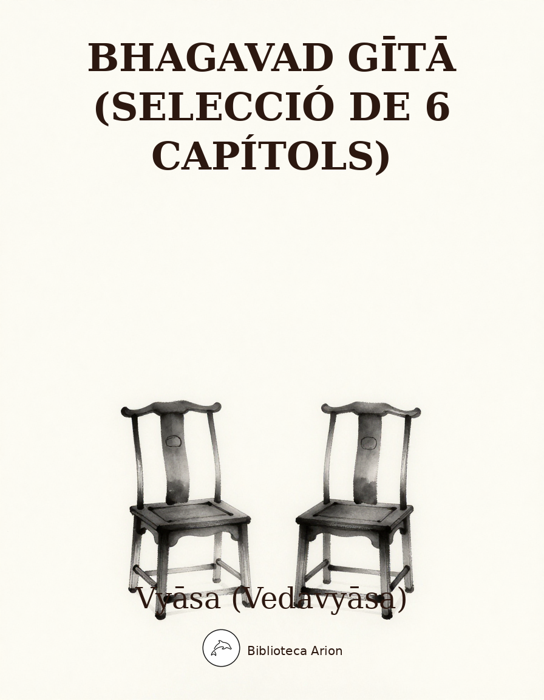

Bhagavad Gītā (selecció de 6 capítols)
भगवद्गीता
Selecció de sis capítols del Bhagavad Gītā, el diàleg filosòfic entre Arjuna i Kṛṣṇa al camp de batalla de Kurukṣetra, part del Mahābhārata. Capítols seleccionats: 1 (Desànim d'Arjuna), 2 (Sāṅkhya), 3 (Karma), 6 (Domini de si mateix), 11 (Visió de la forma universal), 12 (Devoció).
Selecció de 6 capítols
Autor: Vyāsa (Vedavyāsa) — वेदव्यास
Llengua original: sànscrit (devanāgarī)
Font: Sanskrit Wikisource (sa.wikisource.org)
Nota: Text en sànscrit clàssic, part del Mahābhārata (Bhīṣma Parva, capítols 25-42). El Bhagavad Gītā és un diàleg entre el príncep Arjuna i el déu Kṛṣṇa, al camp de batalla de Kurukṣetra, sobre el deure, l’acció, el coneixement i la devoció.
Adhyāya 1 — अर्जुनविषादयोगः
Arjunaviṣādayogaḥ — El ioga del desànim d’Arjuna
ॐ श्रीपरमात्मने नमः अथ श्रीमद्भगवद्गीता प्रथमोऽध्यायः धृतराष्ट्र उवाच धर्मक्षेत्रे कुरुक्षेत्रे समवेता युयुत्सवः । मामकाः पाण्डवाश्चैव किमकुर्वत संजय ॥१-१॥
सञ्जय उवाच दृष्ट्वा तु पाण्डवानीकं व्यूढं दुर्योधनस्तदा । आचार्यमुपसंगम्य राजा वचनमब्रवीत् ॥१-२॥
पश्यैतां पाण्डुपुत्राणामाचार्य महतीं चमूम् । व्यूढां द्रुपदपुत्रेण तव शिष्येण धीमता ॥१-३॥
अत्र शूरा महेष्वासा भीमार्जुनसमा युधि । युयुधानो विराटश्च द्रुपदश्च महारथः ॥१-४॥
धृष्टकेतुश्चेकितानः काशिराजश्च वीर्यवान् । पुरुजित्कुन्तिभोजश्च शैब्यश्च नरपुङ्गवः ॥१-५॥
युधामन्युश्च विक्रान्त उत्तमौजाश्च वीर्यवान् । सौभद्रो द्रौपदेयाश्च सर्व एव महारथाः ॥१-६॥
अस्माकं तु विशिष्टा ये तान्निबोध द्विजोत्तम । नायका मम सैन्यस्य संज्ञार्थं तान्ब्रवीमि ते ॥१-७॥
भवान्भीष्मश्च कर्णश्च कृपश्च समितिंजयः । अश्वत्थामा विकर्णश्च सौमदत्तिस्तथैव च ॥१-८॥
अन्ये च बहवः शूरा मदर्थे त्यक्तजीविताः । नानाशस्त्रप्रहरणाः सर्वे युद्धविशारदाः ॥१-९॥
अपर्याप्तं तदस्माकं बलं भीष्माभिरक्षितम् । पर्याप्तं त्विदमेतेषां बलं भीमाभिरक्षितम् ॥१-१०॥
अयनेषु च सर्वेषु यथाभागमवस्थिताः । भीष्ममेवाभिरक्षन्तु भवन्तः सर्व एव हि ॥१-११॥
तस्य संजनयन्हर्षं कुरुवृद्धः पितामहः । सिंहनादं विनद्योच्चैः शङ्खं दध्मौ प्रतापवान् ॥१-१२॥
ततः शङ्खाश्च भेर्यश्च पणवानकगोमुखाः । सहसैवाभ्यहन्यन्त स शब्दस्तुमुलोऽभवत् ॥१-१३॥
ततः श्वेतैर्हयैर्युक्ते महति स्यन्दने स्थितौ । माधवः पाण्डवश्चैव दिव्यौ शङ्खौ प्रदध्मतुः ॥१-१४॥
पाञ्चजन्यं हृषीकेशो देवदत्तं धनञ्जयः । पौण्ड्रं दध्मौ महाशङ्खं भीमकर्मा वृकोदरः ॥१-१५॥
अनन्तविजयं राजा कुन्तीपुत्रो युधिष्ठिरः । नकुलः सहदेवश्च सुघोषमणिपुष्पकौ ॥१-१६॥
काश्यश्च परमेष्वासः शिखण्डी च महारथः । धृष्टद्युम्नो विराटश्च सात्यकिश्चापराजितः ॥१-१७॥
द्रुपदो द्रौपदेयाश्च सर्वशः पृथिवीपते । सौभद्रश्च महाबाहुः शङ्खान्दध्मुः पृथक्पृथक् ॥१-१८॥
स घोषो धार्तराष्ट्राणां हृदयानि व्यदारयत् । नभश्च पृथिवीं चैव तुमुलो व्यनुनादयन् ॥१-१९॥
अथ व्यवस्थितान्दृष्ट्वा धार्तराष्ट्रान्कपिध्वजः । प्रवृत्ते शस्त्रसंपाते धनुरुद्यम्य पाण्डवः ॥१-२०॥
अर्जुन उवाच हृषीकेशं तदा वाक्यमिदमाह महीपते । सेनयोरुभयोर्मध्ये रथं स्थापय मेऽच्युत ॥१-२१॥
यावदेतान्निरिक्षेऽहं योद्धुकामानवस्थितान् । कैर्मया सह योद्धव्यमस्मिन् रणसमुद्यमे ॥१-२२॥
योत्स्यमानानवेक्षेऽहं य एतेऽत्र समागताः । धार्तराष्ट्रस्य दुर्बुद्धेर्युद्धे प्रियचिकीर्षवः ॥१-२३॥
सञ्जय उवाच एवमुक्तो हृषीकेशो गुडाकेशेन भारत । सेनयोरुभयोर्मध्ये स्थापयित्वा रथोत्तमम् ॥१-२४॥
भीष्मद्रोणप्रमुखतः सर्वेषां च महीक्षिताम् । उवाच पार्थ पश्यैतान्समवेतान्कुरूनिति ॥१-२५॥
तत्रापश्यत्स्थितान्पार्थः पितॄनथ पितामहान् । आचार्यान्मातुलान्भ्रातॄन्पुत्रान्पौत्रान्सखींस्तथा ॥१-२६॥
श्वशुरान्सुहृदश्चैव सेनयोरुभयोरपि । तान्समीक्ष्य स कौन्तेयः सर्वान्बन्धूनवस्थितान् ॥१-२७॥
अर्जुन उवाच कृपया परयाविष्टो विषीदन्निदमब्रवीत् । दृष्ट्वेमं स्वजनं कृष्ण युयुत्सुं समुपस्थितम् ॥१-२८॥
सीदन्ति मम गात्राणि मुखं च परिशुष्यति । वेपथुश्च शरीरे मे रोमहर्षश्च जायते ॥१-२९॥
गाण्डीवं स्रंसते हस्तात्त्वक्चैव परिदह्यते । न च शक्नोम्यवस्थातुं भ्रमतीव च मे मनः ॥१-३०॥
निमित्तानि च पश्यामि विपरीतानि केशव । न च श्रेयोऽनुपश्यामि हत्वा स्वजनमाहवे ॥१-३१॥
न काङ्क्षे विजयं कृष्ण न च राज्यं सुखानि च । किं नो राज्येन गोविन्द किं भोगैर्जीवितेन वा ॥१-३२॥
येषामर्थे काङ्क्षितं नो राज्यं भोगाः सुखानि च । त इमेऽवस्थिता युद्धे प्राणांस्त्यक्त्वा धनानि च ॥१-३३॥
आचार्याः पितरः पुत्रास्तथैव च पितामहाः । मातुलाः श्वशुराः पौत्राः श्यालाः संबन्धिनस्तथा ॥१-३४॥
एतान्न हन्तुमिच्छामि घ्नतोऽपि मधुसूदन । अपि त्रैलोक्यराज्यस्य हेतोः किं नु महीकृते ॥१-३५॥
निहत्य धार्तराष्ट्रान्नः का प्रीतिः स्याज्जनार्दन । पापमेवाश्रयेदस्मान्हत्वैतानाततायिनः ॥१-३६॥
तस्मान्नार्हा वयं हन्तुं धार्तराष्ट्रान्स्वबान्धवान् । स्वजनं हि कथं हत्वा सुखिनः स्याम माधव ॥१-३७॥
यद्यप्येते न पश्यन्ति लोभोपहतचेतसः । कुलक्षयकृतं दोषं मित्रद्रोहे च पातकम् ॥१-३८॥
कथं न ज्ञेयमस्माभिः पापादस्मान्निवर्तितुम् । कुलक्षयकृतं दोषं प्रपश्यद्भिर्जनार्दन ॥१-३९॥
कुलक्षये प्रणश्यन्ति कुलधर्माः सनातनाः । धर्मे नष्टे कुलं कृत्स्नमधर्मोऽभिभवत्युत ॥१-४०॥
अधर्माभिभवात्कृष्ण प्रदुष्यन्ति कुलस्त्रियः । स्त्रीषु दुष्टासु वार्ष्णेय जायते वर्णसंकरः ॥१-४१॥
संकरो नरकायैव कुलघ्नानां कुलस्य च । पतन्ति पितरो ह्येषां लुप्तपिण्डोदकक्रियाः ॥१-४२॥
दोषैरेतैः कुलघ्नानां वर्णसंकरकारकैः । उत्साद्यन्ते जातिधर्माः कुलधर्माश्च शाश्वताः ॥१-४३॥
उत्सन्नकुलधर्माणां मनुष्याणां जनार्दन । नरकेऽनियतं वासो भवतीत्यनुशुश्रुम ॥१-४४॥
अहो बत महत्पापं कर्तुं व्यवसिता वयम् । यद्राज्यसुखलोभेन हन्तुं स्वजनमुद्यताः ॥१-४५॥
यदि मामप्रतीकारमशस्त्रं शस्त्रपाणयः । धार्तराष्ट्रा रणे हन्युस्तन्मे क्षेमतरं भवेत् ॥१-४६॥
सञ्जय उवाच एवमुक्त्वार्जुनः संख्ये रथोपस्थ उपाविशत् । विसृज्य सशरं चापं शोकसंविग्नमानसः ॥१-४७॥
ॐ तत्सदिति श्रीमद्भगवद्गीतासूपनिषत्सु ब्रह्मविद्यायां योगशास्त्रे श्रीकृष्णार्जुनसंवादेऽर्जुनविषादयोगो नाम प्रथमोऽध्यायः ॥ १ ॥
[48 versos]
Adhyāya 2 — साङ्ख्ययोगः
Sāṅkhyayogaḥ — El ioga del coneixement
ॐ श्रीपरमात्मने नमः अथ द्वितीयोऽध्यायः सञ्जय उवाच तं तथा कृपयाविष्टमश्रुपूर्णाकुलेक्षणम् । विषीदन्तमिदं वाक्यमुवाच मधुसूदनः ॥२- १॥
श्रीभगवानुवाच कुतस्त्वा कश्मलमिदं विषमे समुपस्थितम् । अनार्यजुष्टमस्वर्ग्यमकीर्तिकरमर्जुन ॥२- २॥
क्लैब्यं मा स्म गमः पार्थ नैतत्त्वय्युपपद्यते । क्षुद्रं हृदयदौर्बल्यं त्यक्त्वोत्तिष्ठ परन्तप ॥२- ३॥
अर्जुन उवाच कथं भीष्ममहं संख्ये द्रोणं च मधुसूदन । इषुभिः प्रति योत्स्यामि पूजार्हावरिसूदन ॥२- ४॥
गुरूनहत्वा हि महानुभावान् श्रेयो भोक्तुं भैक्ष्यमपीह लोके । हत्वार्थकामांस्तु गुरूनिहैव भुञ्जीय भोगान् रुधिरप्रदिग्धान् ॥२- ५॥
न चैतद्विद्मः कतरन्नो गरीयो यद्वा जयेम यदि वा नो जयेयुः । यानेव हत्वा न जिजीविषाम- स्तेऽवस्थिताः प्रमुखे धार्तराष्ट्राः ॥२- ६॥
कार्पण्यदोषोपहतस्वभावः पृच्छामि त्वां धर्मसम्मूढचेताः । यच्छ्रेयः स्यान्निश्चितं ब्रूहि तन्मे शिष्यस्तेऽहं शाधि मां त्वां प्रपन्नम् ॥२- ७॥
न हि प्रपश्यामि ममापनुद्याद् यच्छोकमुच्छोषणमिन्द्रियाणाम् । अवाप्य भूमावसपत्नमृद्धं राज्यं सुराणामपि चाधिपत्यम् ॥२- ८॥
सञ्जय उवाच एवमुक्त्वा हृषीकेशं गुडाकेशः परन्तप । न योत्स्य इति गोविन्दमुक्त्वा तूष्णीं बभूव ह ॥२- ९॥
तमुवाच हृषीकेशः प्रहसन्निव भारत । सेनयोरुभयोर्मध्ये विषीदन्तमिदं वचः ॥२- १०॥
श्रीभगवानुवाच अशोच्यानन्वशोचस्त्वं प्रज्ञावादांश्च भाषसे । गतासूनगतासूंश्च नानुशोचन्ति पण्डिताः ॥२- ११॥
न त्वेवाहं जातु नासं न त्वं नेमे जनाधिपाः । न चैव न भविष्यामः सर्वे वयमतः परम् ॥२- १२॥
देहिनोऽस्मिन्यथा देहे कौमारं यौवनं जरा । तथा देहान्तरप्राप्तिर्धीरस्तत्र न मुह्यति ॥२- १३॥
मात्रास्पर्शास्तु कौन्तेय शीतोष्णसुखदुःखदाः । आगमापायिनोऽनित्यास्तांस्तितिक्षस्व भारत ॥२- १४॥
यं हि न व्यथयन्त्येते पुरुषं पुरुषर्षभ । समदुःखसुखं धीरं सोऽमृतत्वाय कल्पते ॥२- १५॥
नासतो विद्यते भावो नाभावो विद्यते सतः । उभयोरपि दृष्टोऽन्तस्त्वनयोस्तत्त्वदर्शिभिः ॥२- १६॥
अविनाशि तु तद्विद्धि येन सर्वमिदं ततम् । विनाशमव्ययस्यास्य न कश्चित्कर्तुमर्हति ॥२- १७॥
अन्तवन्त इमे देहा नित्यस्योक्ताः शरीरिणः । अनाशिनोऽप्रमेयस्य तस्माद्युध्यस्व भारत ॥२- १८॥
य एनं वेत्ति हन्तारं यश्चैनं मन्यते हतम् । उभौ तौ न विजानीतो नायं हन्ति न हन्यते ॥२- १९॥
न जायते म्रियते वा कदाचिन्नायं भूत्वा भविता वा न भूयः । अजो नित्यः शाश्वतोऽयं पुराणो न हन्यते हन्यमाने शरीरे ॥२- २०॥
वेदाविनाशिनं नित्यं य एनमजमव्ययम् । कथं स पुरुषः पार्थ कं घातयति हन्ति कम् ॥२- २१॥
वासांसि जीर्णानि यथा विहाय नवानि गृह्णाति नरोऽपराणि । तथा शरीराणि विहाय जीर्णान्यन्यानि संयाति नवानि देही ॥२- २२॥
नैनं छिन्दन्ति शस्त्राणि नैनं दहति पावकः । न चैनं क्लेदयन्त्यापो न शोषयति मारुतः ॥२- २३॥
अच्छेद्योऽयमदाह्योऽयमक्लेद्योऽशोष्य एव च । नित्यः सर्वगतः स्थाणुरचलोऽयं सनातनः ॥२- २४॥
अव्यक्तोऽयमचिन्त्योऽयमविकार्योऽयमुच्यते । तस्मादेवं विदित्वैनं नानुशोचितुमर्हसि ॥२- २५॥
अथ चैनं नित्यजातं नित्यं वा मन्यसे मृतम् । तथापि त्वं महाबाहो नैवं शोचितुमर्हसि ॥२- २६॥
जातस्य हि ध्रुवो मृत्युर्ध्रुवं जन्म मृतस्य च । तस्मादपरिहार्येऽर्थे न त्वं शोचितुमर्हसि ॥२- २७॥
अव्यक्तादीनि भूतानि व्यक्तमध्यानि भारत । अव्यक्तनिधनान्येव तत्र का परिदेवना ॥२- २८॥
आश्चर्यवत्पश्यति कश्चिदेनमाश्चर्यवद्वदति तथैव चान्यः । आश्चर्यवच्चैनमन्यः शृणोति श्रुत्वाप्येनं वेद न चैव कश्चित् ॥२- २९॥
देही नित्यमवध्योऽयं देहे सर्वस्य भारत । तस्मात्सर्वाणि भूतानि न त्वं शोचितुमर्हसि ॥२- ३०॥
स्वधर्ममपि चावेक्ष्य न विकम्पितुमर्हसि । धर्म्याद्धि युद्धाच्छ्रेयोऽन्यत्क्षत्रियस्य न विद्यते ॥२- ३१॥
यदृच्छया चोपपन्नं स्वर्गद्वारमपावृतम् । सुखिनः क्षत्रियाः पार्थ लभन्ते युद्धमीदृशम् ॥२- ३२॥
अथ चेत्त्वमिमं धर्म्यं संग्रामं न करिष्यसि । ततः स्वधर्मं कीर्तिं च हित्वा पापमवाप्स्यसि ॥२- ३३॥
अकीर्तिं चापि भूतानि कथयिष्यन्ति तेऽव्ययाम् । सम्भावितस्य चाकीर्तिर्मरणादतिरिच्यते ॥२- ३४॥
भयाद्रणादुपरतं मंस्यन्ते त्वां महारथाः । येषां च त्वं बहुमतो भूत्वा यास्यसि लाघवम् ॥२- ३५॥
अवाच्यवादांश्च बहून्वदिष्यन्ति तवाहिताः । निन्दन्तस्तव सामर्थ्यं ततो दुःखतरं नु किम् ॥२- ३६॥
हतो वा प्राप्स्यसि स्वर्गं जित्वा वा भोक्ष्यसे महीम् । तस्मादुत्तिष्ठ कौन्तेय युद्धाय कृतनिश्चयः ॥२- ३७॥
सुखदुःखे समे कृत्वा लाभालाभौ जयाजयौ । ततो युद्धाय युज्यस्व नैवं पापमवाप्स्यसि ॥२- ३८॥
एषा तेऽभिहिता सांख्ये बुद्धिर्योगे त्विमां शृणु । बुद्ध्या युक्तो यया पार्थ कर्मबन्धं प्रहास्यसि ॥२- ३९॥
नेहाभिक्रमनाशोऽस्ति प्रत्यवायो न विद्यते । स्वल्पमप्यस्य धर्मस्य त्रायते महतो भयात् ॥२- ४०॥
व्यवसायात्मिका बुद्धिरेकेह कुरुनन्दन । बहुशाखा ह्यनन्ताश्च बुद्धयोऽव्यवसायिनाम् ॥२- ४१॥
यामिमां पुष्पितां वाचं प्रवदन्त्यविपश्चितः । वेदवादरताः पार्थ नान्यदस्तीति वादिनः ॥२- ४२॥
कामात्मानः स्वर्गपरा जन्मकर्मफलप्रदाम् । क्रियाविशेषबहुलां भोगैश्वर्यगतिं प्रति ॥२- ४३॥
भोगैश्वर्यप्रसक्तानां तयापहृतचेतसाम् । व्यवसायात्मिका बुद्धिः समाधौ न विधीयते ॥२- ४४॥
त्रैगुण्यविषया वेदा निस्त्रैगुण्यो भवार्जुन । निर्द्वन्द्वो नित्यसत्त्वस्थो निर्योगक्षेम आत्मवान् ॥२- ४५॥
यावानर्थ उदपाने सर्वतः संप्लुतोदके । तावान्सर्वेषु वेदेषु ब्राह्मणस्य विजानतः ॥२- ४६॥
कर्मण्येवाधिकारस्ते मा फलेषु कदाचन । मा कर्मफलहेतुर्भूर्मा ते सङ्गोऽस्त्वकर्मणि ॥२- ४७॥
योगस्थः कुरु कर्माणि सङ्गं त्यक्त्वा धनंजय । सिद्ध्यसिद्ध्योः समो भूत्वा समत्वं योग उच्यते ॥२- ४८॥
दूरेण ह्यवरं कर्म बुद्धियोगाद्धनंजय । बुद्धौ शरणमन्विच्छ कृपणाः फलहेतवः ॥२- ४९॥
बुद्धियुक्तो जहातीह उभे सुकृतदुष्कृते । तस्माद्योगाय युज्यस्व योगः कर्मसु कौशलम् ॥२- ५०॥
कर्मजं बुद्धियुक्ता हि फलं त्यक्त्वा मनीषिणः । जन्मबन्धविनिर्मुक्ताः पदं गच्छन्त्यनामयम् ॥२- ५१॥
यदा ते मोहकलिलं बुद्धिर्व्यतितरिष्यति । तदा गन्तासि निर्वेदं श्रोतव्यस्य श्रुतस्य च ॥२- ५२॥
श्रुतिविप्रतिपन्ना ते यदा स्थास्यति निश्चला । समाधावचला बुद्धिस्तदा योगमवाप्स्यसि ॥२- ५३॥
अर्जुन उवाच स्थितप्रज्ञस्य का भाषा समाधिस्थस्य केशव । स्थितधीः किं प्रभाषेत किमासीत व्रजेत किम् ॥२- ५४॥
श्रीभगवानुवाच प्रजहाति यदा कामान्सर्वान्पार्थ मनोगतान् । आत्मन्येवात्मना तुष्टः स्थितप्रज्ञस्तदोच्यते ॥२- ५५॥
दुःखेष्वनुद्विग्नमनाः सुखेषु विगतस्पृहः । वीतरागभयक्रोधः स्थितधीर्मुनिरुच्यते ॥२- ५६॥
यः सर्वत्रानभिस्नेहस्तत्तत्प्राप्य शुभाशुभम् । नाभिनन्दति न द्वेष्टि तस्य प्रज्ञा प्रतिष्ठिता ॥२- ५७॥
यदा संहरते चायं कूर्मोऽङ्गानीव सर्वशः । इन्द्रियाणीन्द्रियार्थेभ्यस्तस्य प्रज्ञा प्रतिष्ठिता ॥२- ५८॥
विषया विनिवर्तन्ते निराहारस्य देहिनः । रसवर्जं रसोऽप्यस्य परं दृष्ट्वा निवर्तते ॥२- ५९॥
यततो ह्यपि कौन्तेय पुरुषस्य विपश्चितः । इन्द्रियाणि प्रमाथीनि हरन्ति प्रसभं मनः ॥२- ६०॥
तानि सर्वाणि संयम्य युक्त आसीत मत्परः । वशे हि यस्येन्द्रियाणि तस्य प्रज्ञा प्रतिष्ठिता ॥२- ६१॥
ध्यायतो विषयान्पुंसः सङ्गस्तेषूपजायते । सङ्गात्संजायते कामः कामात्क्रोधोऽभिजायते ॥२- ६२॥
क्रोधाद्भवति संमोहः संमोहात्स्मृतिविभ्रमः । स्मृतिभ्रंशाद्बुद्धिनाशो बुद्धिनाशात्प्रणश्यति ॥२- ६३॥
रागद्वेषवियुक्तैस्तु विषयानिन्द्रियैश्चरन् । आत्मवश्यैर्विधेयात्मा प्रसादमधिगच्छति ॥२- ६४॥
प्रसादे सर्वदुःखानां हानिरस्योपजायते । प्रसन्नचेतसो ह्याशु बुद्धिः पर्यवतिष्ठते ॥२- ६५॥
नास्ति बुद्धिरयुक्तस्य न चायुक्तस्य भावना । न चाभावयतः शान्तिरशान्तस्य कुतः सुखम् ॥२- ६६॥
इन्द्रियाणां हि चरतां यन्मनोऽनु विधीयते । तदस्य हरति प्रज्ञां वायुर्नावमिवाम्भसि ॥२- ६७॥
तस्माद्यस्य महाबाहो निगृहीतानि सर्वशः । इन्द्रियाणीन्द्रियार्थेभ्यस्तस्य प्रज्ञा प्रतिष्ठिता ॥२- ६८॥
या निशा सर्वभूतानां तस्यां जागर्ति संयमी । यस्यां जाग्रति भूतानि सा निशा पश्यतो मुनेः ॥२- ६९॥
आपूर्यमाणमचलप्रतिष्ठं समुद्रमापः प्रविशन्ति यद्वत् । तद्वत्कामा यं प्रविशन्ति सर्वे स शान्तिमाप्नोति न कामकामी ॥२- ७०॥
विहाय कामान्यः सर्वान् पुमांश्चरति निःस्पृहः । निर्ममो निरहंकारः स शान्तिमधिगच्छति ॥२- ७१॥
एषा ब्राह्मी स्थितिः पार्थ नैनां प्राप्य विमुह्यति । स्थित्वास्यामन्तकालेऽपि ब्रह्मनिर्वाणमृच्छति ॥२- ७२॥
ॐ तत्सदिति श्रीमद्भगवद्गीतासूपनिषत्सु ब्रह्मविद्यायां योगशास्त्रे श्रीकृष्णार्जुनसंवादे सांख्ययोगो नाम द्वितीयोऽध्यायः ॥ २ ॥
[73 versos]
Adhyāya 3 — कर्मयोगः
Karmayogaḥ — El ioga de l’acció
ॐ श्रीपरमात्मने नमः अर्जुन उवाच ज्यायसी चेत्कर्मणस्ते मता बुद्धिर्जनार्दन । तत्किं कर्मणि घोरे मां नियोजयसि केशव ॥३- १॥
व्यामिश्रेणेव वाक्येन बुद्धिं मोहयसीव मे । तदेकं वद निश्चित्य येन श्रेयोऽहमाप्नुयाम् ॥३- २॥
श्रीभगवानुवाच लोकेऽस्मिन्द्विविधा निष्ठा पुरा प्रोक्ता मयानघ । ज्ञानयोगेन सांख्यानां कर्मयोगेन योगिनाम् ॥३- ३॥
न कर्मणामनारम्भान्नैष्कर्म्यं पुरुषोऽश्नुते । न च संन्यसनादेव सिद्धिं समधिगच्छति ॥३- ४॥
न हि कश्चित्क्षणमपि जातु तिष्ठत्यकर्मकृत् । कार्यते ह्यवशः कर्म सर्वः प्रकृतिजैर्गुणैः ॥३- ५॥
कर्मेन्द्रियाणि संयम्य य आस्ते मनसा स्मरन् । इन्द्रियार्थान्विमूढात्मा मिथ्याचारः स उच्यते ॥३- ६॥
यस्त्विन्द्रियाणि मनसा नियम्यारभतेऽर्जुन । कर्मेन्द्रियैः कर्मयोगमसक्तः स विशिष्यते ॥३- ७॥
नियतं कुरु कर्म त्वं कर्म ज्यायो ह्यकर्मणः । शरीरयात्रापि च ते न प्रसिद्ध्येदकर्मणः ॥३- ८॥
यज्ञार्थात्कर्मणोऽन्यत्र लोकोऽयं कर्मबन्धनः । तदर्थं कर्म कौन्तेय मुक्तसङ्गः समाचर ॥३- ९॥
सहयज्ञाः प्रजाः सृष्ट्वा पुरोवाच प्रजापतिः । अनेन प्रसविष्यध्वमेष वोऽस्त्विष्टकामधुक् ॥३- १०॥
देवान्भावयतानेन ते देवा भावयन्तु वः । परस्परं भावयन्तः श्रेयः परमवाप्स्यथ ॥३- ११॥
इष्टान्भोगान्हि वो देवा दास्यन्ते यज्ञभाविताः । तैर्दत्तानप्रदायैभ्यो यो भुङ्क्ते स्तेन एव सः ॥३- १२॥
यज्ञशिष्टाशिनः सन्तो मुच्यन्ते सर्वकिल्बिषैः । भुञ्जते ते त्वघं पापा ये पचन्त्यात्मकारणात् ॥३- १३॥
अन्नाद्भवन्ति भूतानि पर्जन्यादन्नसम्भवः । यज्ञाद्भवति पर्जन्यो यज्ञः कर्मसमुद्भवः ॥३- १४॥
कर्म ब्रह्मोद्भवं विद्धि ब्रह्माक्षरसमुद्भवम् । तस्मात्सर्वगतं ब्रह्म नित्यं यज्ञे प्रतिष्ठितम् ॥३- १५॥
एवं प्रवर्तितं चक्रं नानुवर्तयतीह यः । अघायुरिन्द्रियारामो मोघं पार्थ स जीवति ॥३- १६॥
यस्त्वात्मरतिरेव स्यादात्मतृप्तश्च मानवः । आत्मन्येव च सन्तुष्टस्तस्य कार्यं न विद्यते ॥३- १७॥
नैव तस्य कृतेनार्थो नाकृतेनेह कश्चन । न चास्य सर्वभूतेषु कश्चिदर्थव्यपाश्रयः ॥३- १८॥
तस्मादसक्तः सततं कार्यं कर्म समाचर । असक्तो ह्याचरन्कर्म परमाप्नोति पूरुषः ॥३- १९॥
कर्मणैव हि संसिद्धिमास्थिता जनकादयः । लोकसंग्रहमेवापि संपश्यन्कर्तुमर्हसि ॥३- २०॥
यद्यदाचरति श्रेष्ठस्तत्तदेवेतरो जनः । स यत्प्रमाणं कुरुते लोकस्तदनुवर्तते ॥३- २१॥
न मे पार्थास्ति कर्तव्यं त्रिषु लोकेषु किंचन । नानवाप्तमवाप्तव्यं वर्त एव च कर्मणि ॥३- २२॥
यदि ह्यहं न वर्तेयं जातु कर्मण्यतन्द्रितः । मम वर्त्मानुवर्तन्ते मनुष्याः पार्थ सर्वशः ॥३- २३॥
उत्सीदेयुरिमे लोका न कुर्यां कर्म चेदहम् । संकरस्य च कर्ता स्यामुपहन्यामिमाः प्रजाः ॥३- २४॥
सक्ताः कर्मण्यविद्वांसो यथा कुर्वन्ति भारत । कुर्याद्विद्वांस्तथासक्तश्चिकीर्षुर्लोकसंग्रहम् ॥३- २५॥
न बुद्धिभेदं जनयेदज्ञानां कर्मसङ्गिनाम् । जोषयेत्सर्वकर्माणि विद्वान्युक्तः समाचरन् ॥३- २६॥
प्रकृतेः क्रियमाणानि गुणैः कर्माणि सर्वशः । अहंकारविमूढात्मा कर्ताहमिति मन्यते ॥३- २७॥
तत्त्ववित्तु महाबाहो गुणकर्मविभागयोः । गुणा गुणेषु वर्तन्त इति मत्वा न सज्जते ॥३- २८॥
प्रकृतेर्गुणसंमूढाः सज्जन्ते गुणकर्मसु । तानकृत्स्नविदो मन्दान्कृत्स्नविन्न विचालयेत् ॥३- २९॥
मयि सर्वाणि कर्माणि संन्यस्याध्यात्मचेतसा । निराशीर्निर्ममो भूत्वा युध्यस्व विगतज्वरः ॥३- ३०॥
ये मे मतमिदं नित्यमनुतिष्ठन्ति मानवाः । श्रद्धावन्तोऽनसूयन्तो मुच्यन्ते तेऽपि कर्मभिः ॥३- ३१॥
ये त्वेतदभ्यसूयन्तो नानुतिष्ठन्ति मे मतम् । सर्वज्ञानविमूढांस्तान्विद्धि नष्टानचेतसः ॥३- ३२॥
सदृशं चेष्टते स्वस्याः प्रकृतेर्ज्ञानवानपि । प्रकृतिं यान्ति भूतानि निग्रहः किं करिष्यति ॥३- ३३॥
इन्द्रियस्येन्द्रियस्यार्थे रागद्वेषौ व्यवस्थितौ । तयोर्न वशमागच्छेत्तौ ह्यस्य परिपन्थिनौ ॥३- ३४॥
श्रेयान्स्वधर्मो विगुणः परधर्मात्स्वनुष्ठितात् । स्वधर्मे निधनं श्रेयः परधर्मो भयावहः ॥३- ३५॥
अर्जुन उवाच अथ केन प्रयुक्तोऽयं पापं चरति पूरुषः । अनिच्छन्नपि वार्ष्णेय बलादिव नियोजितः ॥३- ३६॥
श्रीभगवानुवाच काम एष क्रोध एष रजोगुणसमुद्भवः । महाशनो महापाप्मा विद्ध्येनमिह वैरिणम् ॥३- ३७॥
धूमेनाव्रियते वह्निर्यथादर्शो मलेन च । यथोल्बेनावृतो गर्भस्तथा तेनेदमावृतम् ॥३- ३८॥
आवृतं ज्ञानमेतेन ज्ञानिनो नित्यवैरिणा । कामरूपेण कौन्तेय दुष्पूरेणानलेन च ॥३- ३९॥
इन्द्रियाणि मनो बुद्धिरस्याधिष्ठानमुच्यते । एतैर्विमोहयत्येष ज्ञानमावृत्य देहिनम् ॥३- ४०॥
तस्मात्त्वमिन्द्रियाण्यादौ नियम्य भरतर्षभ । पाप्मानं प्रजहि ह्येनं ज्ञानविज्ञाननाशनम् ॥३- ४१॥
इन्द्रियाणि पराण्याहुरिन्द्रियेभ्यः परं मनः । मनसस्तु परा बुद्धिर्यो बुद्धेः परतस्तु सः ॥३- ४२॥
एवं बुद्धेः परं बुद्ध्वा संस्तभ्यात्मानमात्मना । जहि शत्रुं महाबाहो कामरूपं दुरासदम् ॥३- ४३॥
ॐ तत्सदिति श्रीमद्भगवद्गीतासूपनिषत्सु ब्रह्मविद्यायां योगशास्त्रे श्रीकृष्णार्जुनसंवादे कर्मयोगो नाम तृतीयोऽध्यायः ॥ ३ ॥
[44 versos]
Adhyāya 6 — आत्मसंयमयोगः
Ātmasaṃyamayogaḥ — El ioga del domini de si mateix
ॐ श्रीपरमात्मने नमः श्रीभगवानुवाच अनाश्रितः कर्मफलं कार्यं कर्म करोति यः । स संन्यासी च योगी च न निरग्निर्न चाक्रियः ॥६- १॥
यं संन्यासमिति प्राहुर्योगं तं विद्धि पाण्डव । न ह्यसंन्यस्तसंकल्पो योगी भवति कश्चन ॥६- २॥
आरुरुक्षोर्मुनेर्योगं कर्म कारणमुच्यते । योगारूढस्य तस्यैव शमः कारणमुच्यते ॥६- ३॥
यदा हि नेन्द्रियार्थेषु न कर्मस्वनुषज्जते । सर्वसंकल्पसंन्यासी योगारूढस्तदोच्यते ॥६- ४॥
उद्धरेदात्मनात्मानं नात्मानमवसादयेत् । आत्मैव ह्यात्मनो बन्धुरात्मैव रिपुरात्मनः ॥६- ५॥
बन्धुरात्मात्मनस्तस्य येनात्मैवात्मना जितः । अनात्मनस्तु शत्रुत्वे वर्तेतात्मैव शत्रुवत् ॥६- ६॥
जितात्मनः प्रशान्तस्य परमात्मा समाहितः । शीतोष्णसुखदुःखेषु तथा मानापमानयोः ॥६- ७॥
ज्ञानविज्ञानतृप्तात्मा कूटस्थो विजितेन्द्रियः । युक्त इत्युच्यते योगी समलोष्टाश्मकाञ्चनः ॥६- ८॥
सुहृन्मित्रार्युदासीनमध्यस्थद्वेष्यबन्धुषु । साधुष्वपि च पापेषु समबुद्धिर्विशिष्यते ॥६- ९॥
योगी युञ्जीत सततमात्मानं रहसि स्थितः । एकाकी यतचित्तात्मा निराशीरपरिग्रहः ॥६- १०॥
शुचौ देशे प्रतिष्ठाप्य स्थिरमासनमात्मनः । नात्युच्छ्रितं नातिनीचं चैलाजिनकुशोत्तरम् ॥६- ११॥
तत्रैकाग्रं मनः कृत्वा यतचित्तेन्द्रियक्रियः । उपविश्यासने युञ्ज्याद्योगमात्मविशुद्धये ॥६- १२॥
समं कायशिरोग्रीवं धारयन्नचलं स्थिरः । सम्प्रेक्ष्य नासिकाग्रं स्वं दिशश्चानवलोकयन् ॥६- १३॥
प्रशान्तात्मा विगतभीर्ब्रह्मचारिव्रते स्थितः । मनः संयम्य मच्चित्तो युक्त आसीत मत्परः ॥६- १४॥
युञ्जन्नेवं सदात्मानं योगी नियतमानसः । शान्तिं निर्वाणपरमां मत्संस्थामधिगच्छति ॥६- १५॥
नात्यश्नतस्तु योगोऽस्ति न चैकान्तमनश्नतः । न चाति स्वप्नशीलस्य जाग्रतो नैव चार्जुन ॥६- १६॥
युक्ताहारविहारस्य युक्तचेष्टस्य कर्मसु । युक्तस्वप्नावबोधस्य योगो भवति दुःखहा ॥६- १७॥
यदा विनियतं चित्तमात्मन्येवावतिष्ठते । निःस्पृहः सर्वकामेभ्यो युक्त इत्युच्यते तदा ॥६- १८॥
यथा दीपो निवातस्थो नेङ्गते सोपमा स्मृता । योगिनो यतचित्तस्य युञ्जतो योगमात्मनः ॥६- १९॥
यत्रोपरमते चित्तं निरुद्धं योगसेवया । यत्र चैवात्मनात्मानं पश्यन्नात्मनि तुष्यति ॥६- २०॥
सुखमात्यन्तिकं यत्तद् बुद्धिग्राह्यमतीन्द्रियम् । वेत्ति यत्र न चैवायं स्थितश्चलति तत्त्वतः ॥६- २१॥
यं लब्ध्वा चापरं लाभं मन्यते नाधिकं ततः । यस्मिन्स्थितो न दुःखेन गुरुणापि विचाल्यते ॥६- २२॥
तं विद्याद्दुःखसंयोगवियोगं योगसंज्ञितम् । स निश्चयेन योक्तव्यो योगोऽनिर्विण्णचेतसा ॥६- २३॥
संकल्पप्रभवान्कामांस्त्यक्त्वा सर्वानशेषतः । मनसैवेन्द्रियग्रामं विनियम्य समन्ततः ॥६- २४॥
शनैः शनैरुपरमेद्बुद्ध्या धृतिगृहीतया । आत्मसंस्थं मनः कृत्वा न किंचिदपि चिन्तयेत् ॥६- २५॥
यतो यतो निश्चरति मनश्चञ्चलमस्थिरम् । ततस्ततो नियम्यैतदात्मन्येव वशं नयेत् ॥६- २६॥
प्रशान्तमनसं ह्येनं योगिनं सुखमुत्तमम् । उपैति शान्तरजसं ब्रह्मभूतमकल्मषम् ॥६- २७॥
युञ्जन्नेवं सदात्मानं योगी विगतकल्मषः । सुखेन ब्रह्मसंस्पर्शमत्यन्तं सुखमश्नुते ॥६- २८॥
सर्वभूतस्थमात्मानं सर्वभूतानि चात्मनि । ईक्षते योगयुक्तात्मा सर्वत्र समदर्शनः ॥६- २९॥
यो मां पश्यति सर्वत्र सर्वं च मयि पश्यति । तस्याहं न प्रणश्यामि स च मे न प्रणश्यति ॥६- ३०॥
सर्वभूतस्थितं यो मां भजत्येकत्वमास्थितः । सर्वथा वर्तमानोऽपि स योगी मयि वर्तते ॥६- ३१॥
आत्मौपम्येन सर्वत्र समं पश्यति योऽर्जुन । सुखं वा यदि वा दुःखं स योगी परमो मतः ॥६- ३२॥
अर्जुन उवाच योऽयं योगस्त्वया प्रोक्तः साम्येन मधुसूदन । एतस्याहं न पश्यामि चञ्चलत्वात्स्थितिं स्थिराम् ॥६- ३३॥
चञ्चलं हि मनः कृष्ण प्रमाथि बलवद्दृढम् । तस्याहं निग्रहं मन्ये वायोरिव सुदुष्करम् ॥६- ३४॥
श्रीभगवानुवाच असंशयं महाबाहो मनो दुर्निग्रहं चलम् । अभ्यासेन तु कौन्तेय वैराग्येण च गृह्यते ॥६- ३५॥
असंयतात्मना योगो दुष्प्राप इति मे मतिः । वश्यात्मना तु यतता शक्योऽवाप्तुमुपायतः ॥६- ३६॥
अर्जुन उवाच अयतिः श्रद्धयोपेतो योगाच्चलितमानसः । अप्राप्य योगसंसिद्धिं कां गतिं कृष्ण गच्छति ॥६- ३७॥
कच्चिन्नोभयविभ्रष्टश्छिन्नाभ्रमिव नश्यति । अप्रतिष्ठो महाबाहो विमूढो ब्रह्मणः पथि ॥६- ३८॥
एतन्मे संशयं कृष्ण छेत्तुमर्हस्यशेषतः । त्वदन्यः संशयस्यास्य छेत्ता न ह्युपपद्यते ॥६- ३९॥
श्रीभगवानुवाच पार्थ नैवेह नामुत्र विनाशस्तस्य विद्यते । न हि कल्याणकृत्कश्चिद्दुर्गतिं तात गच्छति ॥६- ४०॥
प्राप्य पुण्यकृतां लोकानुषित्वा शाश्वतीः समाः । शुचीनां श्रीमतां गेहे योगभ्रष्टोऽभिजायते ॥६- ४१॥
अथवा योगिनामेव कुले भवति धीमताम् । एतद्धि दुर्लभतरं लोके जन्म यदीदृशम् ॥६- ४२॥
तत्र तं बुद्धिसंयोगं लभते पौर्वदेहिकम् । यतते च ततो भूयः संसिद्धौ कुरुनन्दन ॥६- ४३॥
पूर्वाभ्यासेन तेनैव ह्रियते ह्यवशोऽपि सः । जिज्ञासुरपि योगस्य शब्दब्रह्मातिवर्तते ॥६- ४४॥
प्रयत्नाद्यतमानस्तु योगी संशुद्धकिल्बिषः । अनेकजन्मसंसिद्धस्ततो याति परां गतिम् ॥६- ४५॥
तपस्विभ्योऽधिको योगी ज्ञानिभ्योऽपि मतोऽधिकः । कर्मिभ्यश्चाधिको योगी तस्माद्योगी भवार्जुन ॥६- ४६॥
योगिनामपि सर्वेषां मद्गतेनान्तरात्मना । श्रद्धावान् भजते यो मां स मे युक्ततमो मतः ॥६- ४७॥
ॐ तत्सदिति श्रीमद्भगवद्गीतासूपनिषत्सु ब्रह्मविद्यायां योगशास्त्रे श्रीकृष्णार्जुनसंवादे आत्मसंयमयोगो नाम षष्ठोऽध्यायः ॥ ६ ॥
[48 versos]
Adhyāya 11 — विश्वरूपदर्शनयोगः
Viśvarūpadarśanayogaḥ — El ioga de la visió de la forma universal
ॐ श्रीपरमात्मने नमः अर्जुन उवाच मदनुग्रहाय परमं गुह्यमध्यात्मसंज्ञितम् । यत्त्वयोक्तं वचस्तेन मोहोऽयं विगतो मम ॥११- १॥
भवाप्ययौ हि भूतानां श्रुतौ विस्तरशो मया । त्वत्तः कमलपत्राक्ष माहात्म्यमपि चाव्ययम् ॥११- २॥
एवमेतद्यथात्थ त्वमात्मानं परमेश्वर । द्रष्टुमिच्छामि ते रूपमैश्वरं पुरुषोत्तम ॥११- ३॥
मन्यसे यदि तच्छक्यं मया द्रष्टुमिति प्रभो । योगेश्वर ततो मे त्वं दर्शयात्मानमव्ययम् ॥११- ४॥
श्रीभगवानुवाच पश्य मे पार्थ रूपाणि शतशोऽथ सहस्रशः । नानाविधानि दिव्यानि नानावर्णाकृतीनि च ॥११- ५॥
पश्यादित्यान्वसून्रुद्रानश्विनौ मरुतस्तथा । बहून्यदृष्टपूर्वाणि पश्याश्चर्याणि भारत ॥११- ६॥
इहैकस्थं जगत्कृत्स्नं पश्याद्य सचराचरम् । मम देहे गुडाकेश यच्चान्यद् द्रष्टुमिच्छसि ॥११- ७॥
न तु मां शक्यसे द्रष्टुमनेनैव स्वचक्षुषा । दिव्यं ददामि ते चक्षुः पश्य मे योगमैश्वरम् ॥११- ८॥
सञ्जय उवाच एवमुक्त्वा ततो राजन्महायोगेश्वरो हरिः । दर्शयामास पार्थाय परमं रूपमैश्वरम् ॥११- ९॥
अनेकवक्त्रनयनमनेकाद्भुतदर्शनम् । अनेकदिव्याभरणं दिव्यानेकोद्यतायुधम् ॥११- १०॥
दिव्यमाल्याम्बरधरं दिव्यगन्धानुलेपनम् । सर्वाश्चर्यमयं देवमनन्तं विश्वतोमुखम् ॥११- ११॥
दिवि सूर्यसहस्रस्य भवेद्युगपदुत्थिता । यदि भाः सदृशी सा स्याद्भासस्तस्य महात्मनः ॥११- १२॥
तत्रैकस्थं जगत्कृत्स्नं प्रविभक्तमनेकधा । अपश्यद्देवदेवस्य शरीरे पाण्डवस्तदा ॥११- १३॥
ततः स विस्मयाविष्टो हृष्टरोमा धनंजयः । प्रणम्य शिरसा देवं कृताञ्जलिरभाषत ॥११- १४॥
अर्जुन उवाच पश्यामि देवांस्तव देव देहे सर्वांस्तथा भूतविशेषसंघान् । ब्रह्माणमीशं कमलासनस्थ- मृषींश्च सर्वानुरगांश्च दिव्यान् ॥११- १५॥
अनेकबाहूदरवक्त्रनेत्रं पश्यामि त्वां सर्वतोऽनन्तरूपम् । नान्तं न मध्यं न पुनस्तवादिं पश्यामि विश्वेश्वर विश्वरूप ॥११- १६॥
किरीटिनं गदिनं चक्रिणं च तेजोराशिं सर्वतो दीप्तिमन्तम् । पश्यामि त्वां दुर्निरीक्ष्यं समन्ता- द्दीप्तानलार्कद्युतिमप्रमेयम् ॥११- १७॥
त्वमक्षरं परमं वेदितव्यं त्वमस्य विश्वस्य परं निधानम् । त्वमव्ययः शाश्वतधर्मगोप्ता सनातनस्त्वं पुरुषो मतो मे ॥११- १८॥
अनादिमध्यान्तमनन्तवीर्य- मनन्तबाहुं शशिसूर्यनेत्रम् । पश्यामि त्वां दीप्तहुताशवक्त्रं स्वतेजसा विश्वमिदं तपन्तम् ॥११- १९॥
द्यावापृथिव्योरिदमन्तरं हि व्याप्तं त्वयैकेन दिशश्च सर्वाः । दृष्ट्वाद्भुतं रूपमुग्रं तवेदं लोकत्रयं प्रव्यथितं महात्मन् ॥११- २०॥
अमी हि त्वां सुरसंघा विशन्ति केचिद्भीताः प्राञ्जलयो गृणन्ति । स्वस्तीत्युक्त्वा महर्षिसिद्धसंघाः स्तुवन्ति त्वां स्तुतिभिः पुष्कलाभिः ॥११- २१॥
रुद्रादित्या वसवो ये च साध्या विश्वेऽश्विनौ मरुतश्चोष्मपाश्च । गन्धर्वयक्षासुरसिद्धसंघा वीक्षन्ते त्वां विस्मिताश्चैव सर्वे ॥११- २२॥
रूपं महत्ते बहुवक्त्रनेत्रं महाबाहो बहुबाहूरुपादम् । बहूदरं बहुदंष्ट्राकरालं दृष्ट्वा लोकाः प्रव्यथितास्तथाहम् ॥११- २३॥
नभःस्पृशं दीप्तमनेकवर्णं व्यात्ताननं दीप्तविशालनेत्रम् । दृष्ट्वा हि त्वां प्रव्यथितान्तरात्मा धृतिं न विन्दामि शमं च विष्णो ॥११- २४॥
दंष्ट्राकरालानि च ते मुखानि दृष्ट्वैव कालानलसन्निभानि । दिशो न जाने न लभे च शर्म प्रसीद देवेश जगन्निवास ॥११- २५॥
अमी च त्वां धृतराष्ट्रस्य पुत्राः सर्वे सहैवावनिपालसंघैः । भीष्मो द्रोणः सूतपुत्रस्तथासौ सहास्मदीयैरपि योधमुख्यैः ॥११- २६॥
वक्त्राणि ते त्वरमाणा विशन्ति दंष्ट्राकरालानि भयानकानि । केचिद्विलग्ना दशनान्तरेषु संदृश्यन्ते चूर्णितैरुत्तमाङ्गैः ॥११- २७॥
यथा नदीनां बहवोऽम्बुवेगाः समुद्रमेवाभिमुखा द्रवन्ति । तथा तवामी नरलोकवीरा विशन्ति वक्त्राण्यभिविज्वलन्ति ॥११- २८॥
यथा प्रदीप्तं ज्वलनं पतङ्गा विशन्ति नाशाय समृद्धवेगाः । तथैव नाशाय विशन्ति लोका- स्तवापि वक्त्राणि समृद्धवेगाः ॥११- २९॥
लेलिह्यसे ग्रसमानः समन्ता- ल्लोकान्समग्रान्वदनैर्ज्वलद्भिः । तेजोभिरापूर्य जगत्समग्रं भासस्तवोग्राः प्रतपन्ति विष्णो ॥११- ३०॥
आख्याहि मे को भवानुग्ररूपो नमोऽस्तु ते देववर प्रसीद । विज्ञातुमिच्छामि भवन्तमाद्यं न हि प्रजानामि तव प्रवृत्तिम् ॥११- ३१॥
श्रीभगवानुवाच कालोऽस्मि लोकक्षयकृत्प्रवृद्धो लोकान्समाहर्तुमिह प्रवृत्तः । ऋतेऽपि त्वां न भविष्यन्ति सर्वे येऽवस्थिताः प्रत्यनीकेषु योधाः ॥११- ३२॥
तस्मात्त्वमुत्तिष्ठ यशो लभस्व जित्वा शत्रून् भुङ्क्ष्व राज्यं समृद्धम् । मयैवैते निहताः पूर्वमेव निमित्तमात्रं भव सव्यसाचिन् ॥११- ३३॥
द्रोणं च भीष्मं च जयद्रथं च कर्णं तथान्यानपि योधवीरान् । मया हतांस्त्वं जहि मा व्यथिष्ठा युध्यस्व जेतासि रणे सपत्नान् ॥११- ३४॥
सञ्जय उवाच एतच्छ्रुत्वा वचनं केशवस्य कृताञ्जलिर्वेपमानः किरीटी । नमस्कृत्वा भूय एवाह कृष्णं सगद्गदं भीतभीतः प्रणम्य ॥११- ३५॥
अर्जुन उवाच स्थाने हृषीकेश तव प्रकीर्त्या जगत्प्रहृष्यत्यनुरज्यते च । रक्षांसि भीतानि दिशो द्रवन्ति सर्वे नमस्यन्ति च सिद्धसंघाः ॥११- ३६॥
कस्माच्च ते न नमेरन्महात्मन् गरीयसे ब्रह्मणोऽप्यादिकर्त्रे । अनन्त देवेश जगन्निवास त्वमक्षरं सदसत्तत्परं यत् ॥११- ३७॥
त्वमादिदेवः पुरुषः पुराण- स्त्वमस्य विश्वस्य परं निधानम् । वेत्तासि वेद्यं च परं च धाम त्वया ततं विश्वमनन्तरूप ॥११- ३८॥
वायुर्यमोऽग्निर्वरुणः शशाङ्कः प्रजापतिस्त्वं प्रपितामहश्च । नमो नमस्तेऽस्तु सहस्रकृत्वः पुनश्च भूयोऽपि नमो नमस्ते ॥११- ३९॥
नमः पुरस्तादथ पृष्ठतस्ते नमोऽस्तु ते सर्वत एव सर्व । अनन्तवीर्यामितविक्रमस्त्वं सर्वं समाप्नोषि ततोऽसि सर्वः ॥११- ४०॥
सखेति मत्वा प्रसभं यदुक्तं हे कृष्ण हे यादव हे सखेति । अजानता महिमानं तवेदं मया प्रमादात्प्रणयेन वापि ॥११- ४१॥
यच्चावहासार्थमसत्कृतोऽसि विहारशय्यासनभोजनेषु । एकोऽथवाप्यच्युत तत्समक्षं तत्क्षामये त्वामहमप्रमेयम् ॥११- ४२॥
पितासि लोकस्य चराचरस्य त्वमस्य पूज्यश्च गुरुर्गरीयान् । न त्वत्समोऽस्त्यभ्यधिकः कुतोऽन्यो लोकत्रयेऽप्यप्रतिमप्रभाव ॥११- ४३॥
तस्मात्प्रणम्य प्रणिधाय कायं प्रसादये त्वामहमीशमीड्यम् । पितेव पुत्रस्य सखेव सख्युः प्रियः प्रियायार्हसि देव सोढुम् ॥११- ४४॥
अदृष्टपूर्वं हृषितोऽस्मि दृष्ट्वा भयेन च प्रव्यथितं मनो मे । तदेव मे दर्शय देव रूपं प्रसीद देवेश जगन्निवास ॥११- ४५॥
किरीटिनं गदिनं चक्रहस्त- मिच्छामि त्वां द्रष्टुमहं तथैव । तेनैव रूपेण चतुर्भुजेन सहस्रबाहो भव विश्वमूर्ते ॥११- ४६॥
श्रीभगवानुवाच मया प्रसन्नेन तवार्जुनेदं रूपं परं दर्शितमात्मयोगात् । तेजोमयं विश्वमनन्तमाद्यं यन्मे त्वदन्येन न दृष्टपूर्वम् ॥११- ४७॥
न वेदयज्ञाध्ययनैर्न दानै- र्न च क्रियाभिर्न तपोभिरुग्रैः । एवंरूपः शक्य अहं नृलोके द्रष्टुं त्वदन्येन कुरुप्रवीर ॥११- ४८॥
मा ते व्यथा मा च विमूढभावो दृष्ट्वा रूपं घोरमीदृङ्ममेदम् । व्यपेतभीः प्रीतमनाः पुनस्त्वं तदेव मे रूपमिदं प्रपश्य ॥११- ४९॥
सञ्जय उवाच इत्यर्जुनं वासुदेवस्तथोक्त्वा स्वकं रूपं दर्शयामास भूयः । आश्वासयामास च भीतमेनं भूत्वा पुनः सौम्यवपुर्महात्मा ॥११- ५०॥
अर्जुन उवाच दृष्ट्वेदं मानुषं रूपं तव सौम्यं जनार्दन । इदानीमस्मि संवृत्तः सचेताः प्रकृतिं गतः ॥११- ५१॥
श्रीभगवानुवाच सुदुर्दर्शमिदं रूपं दृष्टवानसि यन्मम । देवा अप्यस्य रूपस्य नित्यं दर्शनकाङ्क्षिणः ॥११- ५२॥
नाहं वेदैर्न तपसा न दानेन न चेज्यया । शक्य एवंविधो द्रष्टुं दृष्टवानसि मां यथा ॥११- ५३॥
भक्त्या त्वनन्यया शक्य अहमेवंविधोऽर्जुन । ज्ञातुं द्रष्टुं च तत्त्वेन प्रवेष्टुं च परंतप ॥११- ५४॥
मत्कर्मकृन्मत्परमो मद्भक्तः सङ्गवर्जितः । निर्वैरः सर्वभूतेषु यः स मामेति पाण्डव ॥११- ५५॥
ॐ तत्सदिति श्रीमद्भगवद्गीतासूपनिषत्सु ब्रह्मविद्यायां योगशास्त्रे श्रीकृष्णार्जुनसंवादे विश्वरूपदर्शनयोगो नामैकादशोऽध्यायः ॥ ११ ॥
[56 versos]
Adhyāya 12 — भक्तियोगः
Bhaktiyogaḥ — El ioga de la devoció
ॐ श्रीपरमात्मने नमः अर्जुन उवाच एवं सततयुक्ता ये भक्तास्त्वां पर्युपासते । ये चाप्यक्षरमव्यक्तं तेषां के योगवित्तमाः ॥१२- १॥
श्रीभगवानुवाच मय्यावेश्य मनो ये मां नित्ययुक्ता उपासते । श्रद्धया परयोपेतास्ते मे युक्ततमा मताः ॥१२- २॥
ये त्वक्षरमनिर्देश्यमव्यक्तं पर्युपासते । सर्वत्रगमचिन्त्यं च कूटस्थमचलं ध्रुवम् ॥१२- ३॥
संनियम्येन्द्रियग्रामं सर्वत्र समबुद्धयः । ते प्राप्नुवन्ति मामेव सर्वभूतहिते रताः ॥१२- ४॥
क्लेशोऽधिकतरस्तेषामव्यक्तासक्तचेतसाम् । अव्यक्ता हि गतिर्दुःखं देहवद्भिरवाप्यते ॥१२- ५॥
ये तु सर्वाणि कर्माणि मयि संन्यस्य मत्पराः । अनन्येनैव योगेन मां ध्यायन्त उपासते ॥१२- ६॥
तेषामहं समुद्धर्ता मृत्युसंसारसागरात् । भवामि नचिरात्पार्थ मय्यावेशितचेतसाम् ॥१२- ७॥
मय्येव मन आधत्स्व मयि बुद्धिं निवेशय । निवसिष्यसि मय्येव अत ऊर्ध्वं न संशयः ॥१२- ८॥
अथ चित्तं समाधातुं न शक्नोषि मयि स्थिरम् । अभ्यासयोगेन ततो मामिच्छाप्तुं धनंजय ॥१२- ९॥
अभ्यासेऽप्यसमर्थोऽसि मत्कर्मपरमो भव । मदर्थमपि कर्माणि कुर्वन्सिद्धिमवाप्स्यसि ॥१२- १०॥
अथैतदप्यशक्तोऽसि कर्तुं मद्योगमाश्रितः । सर्वकर्मफलत्यागं ततः कुरु यतात्मवान् ॥१२- ११॥
श्रेयो हि ज्ञानमभ्यासाज्ज्ञानाद्ध्यानं विशिष्यते । ध्यानात्कर्मफलत्यागस्त्यागाच्छान्तिरनन्तरम् ॥१२- १२॥
अद्वेष्टा सर्वभूतानां मैत्रः करुण एव च । निर्ममो निरहंकारः समदुःखसुखः क्षमी ॥१२- १३॥
संतुष्टः सततं योगी यतात्मा दृढनिश्चयः । मय्यर्पितमनोबुद्धिर्यो मद्भक्तः स मे प्रियः ॥१२- १४॥
यस्मान्नोद्विजते लोको लोकान्नोद्विजते च यः । हर्षामर्षभयोद्वेगैर्मुक्तो यः स च मे प्रियः ॥१२- १५॥
अनपेक्षः शुचिर्दक्ष उदासीनो गतव्यथः । सर्वारम्भपरित्यागी यो मद्भक्तः स मे प्रियः ॥१२- १६॥
यो न हृष्यति न द्वेष्टि न शोचति न काङ्क्षति । शुभाशुभपरित्यागी भक्तिमान्यः स मे प्रियः ॥१२- १७॥
समः शत्रौ च मित्रे च तथा मानापमानयोः । शीतोष्णसुखदुःखेषु समः सङ्गविवर्जितः ॥१२- १८॥
तुल्यनिन्दास्तुतिर्मौनी सन्तुष्टो येन केनचित् । अनिकेतः स्थिरमतिर्भक्तिमान्मे प्रियो नरः ॥१२- १९॥
ये तु धर्म्यामृतमिदं यथोक्तं पर्युपासते । श्रद्दधाना मत्परमा भक्तास्तेऽतीव मे प्रियाः ॥१२- २०॥
ॐ तत्सदिति श्रीमद्भगवद्गीतासूपनिषत्सु ब्रह्मविद्यायां योगशास्त्रे श्रीकृष्णार्जुनसंवादे भक्तियोगो नाम द्वादशोऽध्यायः ॥ १२ ॥
[21 versos]
Capítol 1 — El ioga del desànim d’Arjuna
Dhṛtarāṣṭra va dir: Al camp del dharma, al camp de Kuru, reunits i desitjosos de combatre, què van fer els meus fills i els fills de Pāṇḍu, Sañjaya? (1.1)
Sañjaya va dir: En veure l’exèrcit dels Pāṇḍava disposat en formació de combat, el rei Duryodhana s’acostà al mestre i pronuncià aquestes paraules: (1.2)
Contempla, oh mestre, aquest gran exèrcit dels fills de Pāṇḍu, disposat en formació pel fill de Drupada, el teu deixeble intel·ligent. (1.3)
Hi ha aquí guerrers valents, grans arquers iguals a Bhīma i Arjuna en el combat: Yuyudhāna, Virāṭa i Drupada, el gran combatent de carro. (1.4)
Dhṛṣṭaketu, Cekitāna i el valerós rei de Kāśī; Purujit, Kuntibhoja i Śaibya, el més excel·lent dels homes. (1.5)
El valent Yudhāmanyu i el valerós Uttamauja; el fill de Subhadrā i els fills de Draupadī, tots ells grans combatents de carro. (1.6)
Coneix també, oh el millor dels brahmans, els més distingits dels nostres, els capitans del meu exèrcit. Els esmento perquè els coneguis: (1.7)
Tu mateix, Bhīṣma, Karṇa i Kṛpa, sempre victoriós en batalla; Aśvatthāmā, Vikarṇa i també el fill de Somadatta. (1.8)
I molts altres guerrers disposats a donar la vida per mi, armats amb armes diverses, tots experts en l’art de la guerra. (1.9)
Il·limitat és el nostre exèrcit, protegit per Bhīṣma, mentre que limitat és el seu exèrcit, protegit per Bhīma. (1.10)
Per tant, en totes les posicions estratègiques, cadascú en el seu lloc assignat, protegiu sobretot Bhīṣma, tots vosaltres sense excepció. (1.11)
Aleshores, l’ancià dels Kuru, l’avi gloriós, bramulant amb força com un lleó, va fer sonar la seva conquilla, omplint Duryodhana de joia. (1.12)
Tot seguit, conquilles, timbals, tambors, tabals i corns van ressonar tots alhora, i el seu fragor fou tumultuós. (1.13)
Llavors, drets en un gran carro enganxat amb cavalls blancs, Mādhava i el fill de Pāṇḍu van fer sonar les seves conquilles divines. (1.14)
Hṛṣīkeśa féu sonar Pāñcajanya, i Dhanañjaya féu sonar Devadatta; Bhīma, el de les terribles accions, féu sonar la gran conquilla Pauṇḍra. (1.15)
El rei Yudhiṣṭhira, fill de Kuntī, féu sonar Anantavijaya; Nakula i Sahadeva feren sonar Sughoṣa i Maṇipuṣpaka. (1.16)
El gran arquer rei de Kāśī, Śikhaṇḍī el gran combatent de carro, Dhṛṣṭadyumna, Virāṭa i l’invicte Sātyaki, (1.17)
Drupada i els fills de Draupadī, oh senyor de la terra, i el fill de Subhadrā, el dels braços poderosos, tots feren sonar les seves conquilles, cadascú la seva. (1.18)
Aquell fragor va esquinçar els cors dels fills de Dhṛtarāṣṭra, i el seu clam tumultuós ressona pel cel i per la terra. (1.19)
Aleshores, en veure els fills de Dhṛtarāṣṭra disposats en formació, quan ja començaven a volar les armes, el fill de Pāṇḍu, que porta la bandera del simi, va alçar l’arc. (1.20)
Arjuna va dir: I adreçà aquestes paraules a Hṛṣīkeśa, oh senyor de la terra: Atura el meu carro entre els dos exèrcits, oh Acyuta, (1.21)
perquè pugui contemplar els qui s’han aplegat aquí, desitjosos de combatre, contra els quals he de lluitar en aquest esforç de guerra. (1.22)
Vull observar els qui s’han reunit aquí per combatre, desitjosos de complaure en la batalla el fill de Dhṛtarāṣṭra, el de ment perversa. (1.23)
Sañjaya va dir: Així interpel·lat per Guḍākeśa, oh Bhārata, Hṛṣīkeśa va aturar l’excel·lent carro entre els dos exèrcits, (1.24)
davant de Bhīṣma, Droṇa i tots els senyors de la terra, i digué: Mira, oh Pārtha, tots aquests Kuru reunits. (1.25)
Allà, Pārtha va veure, drets en ambdós exèrcits, pares, avis, (1.26)
mestres, oncles materns, germans, fills, néts, amics, sogres i companys. (1.27)
Arjuna va dir: En contemplar tots aquests parents disposats per al combat, el fill de Kuntī, posseït per una compassió profunda, digué abatut: En veure el meu propi llinatge, oh Kṛṣṇa, reunit aquí i desitjós de combatre, (1.28)
se m’afluixen els membres, se m’asseca la boca, el cos em tremola i se m’eriça la pell. (1.29)
L’arc Gāṇḍīva em rellisca de les mans, la pell em crema; no puc mantenir-me dret i la ment em dóna voltes. (1.30)
Veig presagis funests, oh Keśava, i no preveig cap bé de matar els meus en la batalla. (1.31)
No desitjo la victòria, oh Kṛṣṇa, ni el regne ni els plaers. De què ens serveix el regne, oh Govinda? De què els gauds o la vida mateixa? (1.32)
Aquells per als quals desitgem el regne, els gauds i els plaers, són aquí, formats per a la batalla, havent renunciat a la vida i a les riqueses: (1.33)
mestres, pares, fills i també avis, oncles materns, sogres, néts, cunyats i parents. (1.34)
No vull matar-los, oh Madhusūdana, ni que ells em matin, ni per la sobirania dels tres mons, i menys encara per la d’aquesta terra. (1.35)
Quin plaer trobaríem, oh Janārdana, en matar els fills de Dhṛtarāṣṭra? Només el pecat recauria sobre nosaltres en matar aquests agressors. (1.36)
Per tant no ens escau de matar els fills de Dhṛtarāṣṭra, els nostres propis parents. Com podríem ser feliços, oh Mādhava, matant la nostra pròpia gent? (1.37)
Encara que ells, amb la consciència encegada per l’avarícia, no vegin cap falta en la destrucció de la família ni cap pecat en la traïció als amics, (1.38)
com és que nosaltres, oh Janārdana, que veiem clarament la culpa de destruir una família, no sabem apartar-nos d’aquest pecat? (1.39)
Amb la destrucció de la família pereixen els dharmes eterns del llinatge. Destruït el dharma, la iniquitat domina tot el clan. (1.40)
Quan la iniquitat predomina, oh Kṛṣṇa, es corrompen les dones del llinatge. Corrompudes les dones, oh Vārṣṇeya, s’origina la barreja de castes. (1.41)
La barreja de castes porta a l’infern als destructors de la família i a la família mateixa, car els seus avantpassats decauen, privats de les ofrenes d’arròs i d’aigua. (1.42)
Per aquestes faltes dels destructors de la família, que causen la barreja de castes, s’esborren els dharmes de casta i els dharmes eterns del llinatge. (1.43)
Per als homes que han destruït els dharmes del llinatge, oh Janārdana, l’estada a l’infern és certa: així ho hem escoltat dels savis. (1.44)
Ai! Quina gran iniquitat estem decidits a cometre, nosaltres que, per cobdícia de regne i de plaers, ens disposem a matar els nostres! (1.45)
Si els fills de Dhṛtarāṣṭra, amb les armes a la mà, em matessin a mi en la batalla, sense que jo oferís resistència i desarmat, això em fóra més venturós. (1.46)
Sañjaya va dir: Havent dit això en el camp de batalla, Arjuna s’assegué al seient del carro, deixant anar l’arc i les fletxes, amb l’ànim trasbalsat pel dolor. (1.47)
Capítol 2 — El ioga del coneixement
Sañjaya va dir: A ell, així posseït per la compassió, amb els ulls plens de llàgrimes i torbats, abatut, Madhusūdana li adreçà aquestes paraules: (2.1)
El Senyor Benaurat va dir: D’on et ve, Arjuna, en aquest moment crític, aquesta desfeta indigna d’un noble, que no condueix al cel i que causa deshonra? (2.2)
No cedeixis a la feblesa, oh Pārtha; no t’escau. Abandona aquesta mesquina covardia del cor i alça’t, oh terror dels enemics! (2.3)
Arjuna va dir: Com puc combatre amb fletxes, oh Madhusūdana, contra Bhīṣma i Droṇa en la batalla, ells que són dignes de veneració, oh destructor d’enemics? (2.4)
Millor fóra viure al món d’almoines que matar mestres tan venerables. Si els matés, encara que siguin cobdiciosos, tots els meus gauds quedarien tacats de sang. (2.5)
I no sabem què ens és millor: vèncer o ser vençuts. Els mateixos fills de Dhṛtarāṣṭra, després de matar els quals no voldríem viure, estan davant nostre formats per a la batalla. (2.6)
Amb la naturalesa vençuda per la feblesa de la compassió, amb la ment confosa sobre el deure, et demano: digues-me amb certesa què és el millor per a mi. Sóc el teu deixeble; instrueix-me, car m’he refugiat en tu. (2.7)
No veig res que pugui dissipar aquest dolor que em desseca els sentits, ni que obtingués un regne pròsper i sense rivals a la terra, ni tan sols la senyoria dels déus. (2.8)
Sañjaya va dir: Havent parlat així a Hṛṣīkeśa, Guḍākeśa, el terror dels enemics, digué a Govinda: «No combatré», i va emmudir. (2.9)
Aleshores, oh Bhārata, Hṛṣīkeśa, com si somrigués, adreçà aquestes paraules a aquell que s’afligia entre els dos exèrcits: (2.10)
El Senyor Benaurat va dir: Plores per aquells que no mereixen ser plorats i, tanmateix, parles com si fossis savi. Els veritablement savis no ploren ni pels vius ni pels morts. (2.11)
Mai no hi hagué un temps en què jo no existís, ni tu, ni aquests senyors dels homes, i mai cap de nosaltres no deixarà d’existir d’ara endavant. (2.12)
Així com l’ànima encarnada passa en aquest cos per la infantesa, la joventut i la vellesa, de la mateixa manera passa a un altre cos. El savi no es torba per això. (2.13)
Els contactes dels sentits amb la matèria, oh fill de Kuntī, produeixen fred i calor, plaer i dolor. Vénen i se’n van, són transitoris: suporta’ls amb fortalesa, oh Bhārata. (2.14)
L’home a qui aquests contactes no pertorben, oh el millor dels homes, que roman igual en el dolor i en el plaer, aquell savi es fa mereixedor de la immortalitat. (2.15)
Del no-ésser no prové l’existència; de l’ésser no prové la no-existència. La veritat última d’ambdós ha estat contemplada pels qui veuen l’essència de les coses. (2.16)
Sàpigues que allò que impregna tot això és indestructible. Ningú no pot causar la destrucció d’allò que és imperible. (2.17)
Aquests cossos tenen fi, però es diu que l’ànima que els habita és eterna, indestructible i incommensurable. Per tant, combat, oh Bhārata! (2.18)
Qui creu que l’ànima mata i qui creu que pot ser morta, tots dos no comprenen: l’ànima ni mata ni és morta. (2.19)
No neix mai ni mor; no és que havent existit deixi d’existir. No nascuda, eterna, perpètua i primordial, no és morta quan el cos és mort. (2.20)
Qui coneix l’ànima com a indestructible, eterna, no nascuda i imperible, com pot, oh Pārtha, fer matar algú o matar-lo ell mateix? (2.21)
Així com un home es despulla dels vestits gastats i en pren de nous, de la mateixa manera l’ànima encarnada abandona els cossos gastats i n’adopta de nous. (2.22)
Les armes no la tallen, el foc no la crema, les aigües no la mullen, el vent no la desseca. (2.23)
No pot ser tallada, no pot ser cremada, no pot ser mullada ni dessecada. És eterna, present arreu, ferma, immòbil i primordial. (2.24)
Es diu que és no-manifesta, inconcebible i immutable. Per tant, sabent-ho, no hauríes d’afligir-te. (2.25)
I fins i tot si creus que neix constantment i constantment mor, ni així, oh el dels braços poderosos, hauries d’afligir-te. (2.26)
Per a qui ha nascut, la mort és certa; per a qui ha mort, el naixement és cert. Per tant, per una cosa inevitable no hauries d’afligir-te. (2.27)
Els éssers són no-manifests en l’origen, manifests en l’estadi intermedi i no-manifests novament en la dissolució, oh Bhārata. Quin motiu hi ha per a la lamentació? (2.28)
Com un prodigi algú la contempla; com un prodigi un altre en parla; com un prodigi un altre n’escolta; però, fins i tot havent-ne escoltat, ningú no la coneix veritablement. (2.29)
L’ànima que habita en el cos de tots és sempre indestructible, oh Bhārata. Per tant, no hauries de plorar per cap ésser. (2.30)
Considerant també el teu propi deure, no hauries de vacil·lar, car per a un kṣatriya no hi ha res millor que una guerra justa. (2.31)
Feliços els kṣatriya, oh Pārtha, que troben una guerra com aquesta, que els arriba per atzar com una porta oberta al cel. (2.32)
Però si no emprens aquest combat just, aleshores, abandonant el teu deure i el teu honor, incorreràs en pecat. (2.33)
I la gent contarà la teva deshonra per sempre, i per a un home honorat la deshonra és pitjor que la mort. (2.34)
Els grans combatents de carro creuran que t’has retirat de la batalla per por, i tu, que eres tant estimat per ells, cauràs en el seu menyspreu. (2.35)
Els teus enemics diran moltes paraules indignes, menyspreant la teva capacitat. Què hi ha de més dolorós que això? (2.36)
Si ets mort, assoliràs el cel; si vences, gaudiràs de la terra. Per tant, alça’t, oh fill de Kuntī, decidit a combatre! (2.37)
Prenent com a iguals el plaer i el dolor, el guany i la pèrdua, la victòria i la derrota, disposa’t aleshores al combat. Així no incorreràs en pecat. (2.38)
Això que t’he exposat és la saviesa del Sāṅkhya. Escolta ara la del Ioga, amb la qual, oh Pārtha, et deslliuraràs dels lligams de l’acció. (2.39)
En aquest camí no hi ha esforç perdut ni retrocés. Fins i tot una mica d’aquest dharma allibera del gran temor. (2.40)
En aquest camí, la intel·ligència determinada és una, oh descendent de Kuru; però les intel·ligències dels irresoluts són múltiples i infinites. (2.41)
Aquestes paraules florides que pronuncien els insensats, oh Pārtha, que es complauen en la lletra dels Veda i diuen que no hi ha res més, (2.42)
plens de desig, amb el cel com a meta, oferint com a fruit el renaixement i les conseqüències de les accions, dedicats a múltiples rituals especials per obtenir gauds i poder, (2.43)
a aquells que estan aferrats als gauds i al poder, i la ment dels quals és captivada per aquestes paraules, no els és donada la intel·ligència determinada en la concentració profunda. (2.44)
Els Veda tracten del domini dels tres guṇa. Allibera’t dels tres guṇa, oh Arjuna, lliure de les dualitats, establert sempre en la puresa, despreocupat de l’adquisició i la conservació, centrat en l’ànima. (2.45)
La utilitat que té un pou quan les aigües inunden per tot arreu, la mateixa utilitat tenen tots els Veda per al brahman que posseeix el coneixement. (2.46)
El teu dret és només a l’acció, mai als seus fruits. Que el fruit de l’acció no sigui mai el teu mòbil; però tampoc no t’aferris a la inacció. (2.47)
Establert en el ioga, acompleix les accions, oh Dhanañjaya, abandonant l’aferrament, mantenint-te igual en l’èxit i en el fracàs. Aquesta equanimitat s’anomena ioga. (2.48)
L’acció és molt inferior al ioga de la intel·ligència, oh Dhanañjaya. Cerca refugi en la intel·ligència. Mesquins són aquells que actuen pel fruit. (2.49)
Qui està unit a la intel·ligència es deslliura en aquesta vida tant del mèrit com del demèrit. Per tant, consagra’t al ioga: el ioga és l’habilitat en l’acció. (2.50)
Els savis, units a la intel·ligència, renunciant al fruit de l’acció, alliberats dels lligams del renaixement, assoleixen l’estat exempt de tot mal. (2.51)
Quan la teva intel·ligència haurà travessat l’espessor de la il·lusió, aleshores seràs indiferent a allò que has escoltat i a allò que has d’escoltar. (2.52)
Quan la teva intel·ligència, ara confosa per la diversitat de les doctrines, romangui ferma i immòbil en la concentració profunda, aleshores assoliràs el ioga. (2.53)
Arjuna va dir: Com es descriu aquell que té la saviesa ferma i que està absorbit en la concentració profunda, oh Keśava? Com parla aquell de ment ferma? Com seu? Com camina? (2.54)
El Senyor Benaurat va dir: Quan un home abandona tots els desigs que habiten en la ment, oh Pārtha, i es satisfà en si mateix per si mateix, aleshores se’l diu de saviesa ferma. (2.55)
Aquell la ment del qual no es torba en el dolor, que no anhela el plaer, lliure de passió, de por i d’ira, se’l diu muni de ment ferma. (2.56)
Qui no s’afereix a res, qui, en rebre el bé o el mal, ni se n’alegra ni en sent aversió, la seva saviesa és establerta. (2.57)
Quan retira completament els sentits dels objectes dels sentits, com la tortuga retira les seves extremitats, la seva saviesa és establerta. (2.58)
Els objectes dels sentits s’aparten de l’ànima encarnada que s’absté, però el gust pels objectes roman. Fins i tot aquest gust desapareix quan ha contemplat el Suprem. (2.59)
Fins i tot en l’home savi que s’esforça, oh fill de Kuntī, els sentits impetuosos li arravateixen la ment per la força. (2.60)
Havent controlat tots els sentits, que romangui concentrat, fixat en mi com a meta suprema. Car d’aquell que té els sentits sota control, la saviesa és establerta. (2.61)
De la contemplació dels objectes dels sentits neix l’aferrament; de l’aferrament neix el desig; del desig neix la ira. (2.62)
De la ira prové la confusió; de la confusió, la pèrdua de la memòria; de la pèrdua de la memòria, la destrucció de la intel·ligència; destruïda la intel·ligència, hom pereix. (2.63)
Però aquell que es mou entre els objectes dels sentits amb els sentits lliures d’atracció i d’aversió, sotmesos al domini de l’ànima, assoleix la serenitat. (2.64)
En la serenitat es produeix l’extinció de tots els dolors, car la intel·ligència de l’home de ment serena s’estableix ràpidament amb fermesa. (2.65)
No hi ha intel·ligència per a qui no està concentrat, ni hi ha meditació per a qui no està concentrat. Per a qui no medita no hi ha pau, i sense pau, com pot haver-hi felicitat? (2.66)
Quan la ment segueix els sentits errants, se n’emporta la saviesa, com el vent s’emporta una barca sobre les aigües. (2.67)
Per tant, oh el dels braços poderosos, d’aquell que ha retirat completament els sentits dels objectes dels sentits, la saviesa és establerta. (2.68)
Allò que és nit per a tots els éssers, el savi controlat hi vetlla; allò en què vetllen els éssers, és nit per al muni que veu. (2.69)
Així com les aigües entren en l’oceà, que s’omple sense fi però roman immòbil, de la mateixa manera aquell en qui tots els desigs entren sense pertorbar-lo assoleix la pau, no pas aquell que nodreix els desigs. (2.70)
L’home que abandona tots els desigs i camina sense anhel, lliure del sentit de possessió i d’egoisme, aquell assoleix la pau. (2.71)
Aquest és l’estat brahmànic, oh Pārtha. Qui l’assoleix no es torba mai més. Establert en aquest estat, fins i tot en l’hora de la mort, ateny l’extinció en Brahman. (2.72)
Capítol 3 — El ioga de l’acció
Arjuna digué: Si consideres que la intel·ligència és superior a l’acció, oh Janārdana, per què em compel·leixes a aquesta acció terrible, oh Keśava? (3.1)
Amb paraules aparentment contradictòries sembla que confons el meu enteniment. Digues-me amb certesa aquell únic camí pel qual jo pugui assolir el bé suprem. (3.2)
El Senyor Benaurat digué: En aquest món, oh sense pecat, he exposat antigament un doble camí: el ioga del coneixement per als qui discerneixen, i el ioga de l’acció per als ioguis. (3.3)
No pas per l’abstenció de les accions assoleix l’home l’estat més enllà de l’acció, ni per la mera renúncia arriba a la perfecció. (3.4)
Car ningú no pot romandre ni un sol instant sense actuar; tothom és impel·lit a l’acció, malgrat ell mateix, pels guṇa nascuts de la naturalesa. (3.5)
Aquell que refrena els òrgans d’acció però roman amb la ment evocant els objectes dels sentits, aqueix ésser confús és anomenat hipòcrita. (3.6)
Però aquell que, dominant els sentits amb la ment, emprèn el ioga de l’acció mitjançant els òrgans d’acció, sense aferrament, oh Arjuna, aqueix excel·leix. (3.7)
Acompleix l’acció prescrita, car l’acció és superior a la inacció; fins i tot el manteniment del teu cos no seria possible sense actuar. (3.8)
Llevat de l’acció realitzada com a sacrifici, aquest món és esclau de l’acció. Per tant, oh fill de Kuntī, acompleix l’acció amb aquest propòsit, lliure de tot aferrament. (3.9)
Havent creat les criatures juntament amb el sacrifici, Prajāpati digué antany: «Per mitjà d’aquest prosperareu; que sigui per a vosaltres la vaca que compleix els desigs.» (3.10)
Amb aquest nodrisseu els déus, i els déus us nodriran a vosaltres; nodrint-vos mútuament, assolireu el bé suprem. (3.11)
Car els déus, nodrits pel sacrifici, us atorgaran els gauds desitjats. Qui frueix dels seus dons sense oferir-los-en a canvi, aqueix és veritablement un lladre. (3.12)
Els justos que mengen les restes del sacrifici s’alliberen de tota culpa; però els malvats que cuinen només per a ells mateixos, aqueixos devoren pecat. (3.13)
Del nodriment neixen les criatures; de la pluja neix el nodriment; del sacrifici neix la pluja; el sacrifici neix de l’acció. (3.14)
Sàpigues que l’acció neix de Brahman, i Brahman neix de l’Imperible. Per tant, el Brahman que tot ho impregna roman eternament establert en el sacrifici. (3.15)
Aquell qui no fa girar la roda així posada en moviment, viu en va, oh Pārtha, amb una vida de pecat, delectant-se en els sentits. (3.16)
Però l’home que troba plaer només en el Si mateix, que està satisfet en el Si mateix i content únicament en el Si mateix, per a ell no hi ha cap deure que calgui acomplir. (3.17)
Per a ell no hi ha cap propòsit ni en l’acció feta ni en l’acció omesa, ni depèn de cap criatura per a cap fi. (3.18)
Per tant, acompleix sempre l’acció que cal fer, sense aferrament; car l’home que actua sense aferrament assoleix el Suprem. (3.19)
Per l’acció, certament, Janaka i d’altres assoliren la perfecció. Considerant també el manteniment de l’ordre del món, hauries d’actuar. (3.20)
Allò que fa l’home excel·lent, això mateix fan els altres; la norma que ell estableix, el món la segueix. (3.21)
No hi ha res en els tres mons, oh Pārtha, que jo hagi de fer, ni res que no hagi estat assolit i que calgui assolir; i tanmateix, jo persevero en l’acció. (3.22)
Car si jo no actués infatigablement, oh Pārtha, els homes seguirien pertot arreu el meu camí. (3.23)
Aquests mons es desfarien si jo no actués; seria l’autor de la confusió i destruiria aquestes criatures. (3.24)
Així com els ignorants actuen amb aferrament a l’acció, oh Bhārata, així hauria d’actuar el savi, però sense aferrament, desitjant el manteniment de l’ordre del món. (3.25)
Que el savi no pertorbi l’enteniment dels ignorants aferrats a l’acció; sinó que, actuant amb disciplina, els faci estimar totes les accions. (3.26)
Totes les accions són realitzades en tot moment pels guṇa de la naturalesa; però aquell que està confós per l’egotisme pensa: «Jo sóc qui actua.» (3.27)
Tanmateix, oh braç poderós, aquell que coneix la veritat sobre la distinció entre els guṇa i les accions, comprenent que són els guṇa els qui actuen sobre els guṇa, no s’hi afereix. (3.28)
Aquells que estan confosos pels guṇa de la naturalesa s’aferren a les accions dels guṇa. Que aquell qui coneix la totalitat no pertorbi els ignorants que només en coneixen una part. (3.29)
Renunciant totes les accions en mi, amb la ment fixada en el Si mateix suprem, lliure d’esperança i d’egoisme, lluita sense angoixa. (3.30)
Aquells homes que segueixen sempre aquest ensenyament meu, plens de fe i sense enveja, aqueixos també s’alliberen de les accions. (3.31)
Però aquells qui, plens d’enveja, no segueixen el meu ensenyament, sàpigues que estan confosos en tot coneixement, perduts i sense discerniment. (3.32)
Fins i tot l’home de coneixement actua d’acord amb la seva pròpia naturalesa; totes les criatures segueixen la seva naturalesa. De què servirà la repressió? (3.33)
En cada sentit hi ha atracció i aversió establertes envers els seus objectes. Que hom no caigui sota el seu domini, car són adversaris en el camí. (3.34)
Millor és el propi deure, encara que imperfecte, que el deure d’un altre ben acomplert. Millor és morir en el propi deure; el deure d’un altre és perillós. (3.35)
Arjuna digué: Però, què és allò que empeny l’home a cometre pecat, fins i tot contra la seva voluntat, oh Vārṣṇeya, com si hi fos forçat? (3.36)
El Senyor Benaurat digué: És el desig, és la ira, nascuts del guṇa de rajas, totdevorador, totpecaminós: sàpigues que aquest és l’enemic en aquest món. (3.37)
Així com el foc és envoltat pel fum, i el mirall per la pols, i l’embrió per la membrana, així és envoltat el coneixement per aquell. (3.38)
El coneixement és velat per aquest enemic etern del savi, oh fill de Kuntī, que pren la forma del desig, foc insaciable. (3.39)
Els sentits, la ment i la intel·ligència se’n diuen la seu; per mitjà d’aquests, aquell confon l’ésser encarnat, velant-li el coneixement. (3.40)
Per tant, oh el millor dels Bhārata, refrenats primer els sentits, destrueix aquest malvat, destructor del coneixement i del discerniment. (3.41)
Diuen que els sentits són superiors; superior als sentits és la ment; superior a la ment és la intel·ligència; i allò que és superior a la intel·ligència és Ell. (3.42)
Així, havent conegut allò que és superior a la intel·ligència, i afermant el Si mateix pel Si mateix, destrueix l’enemic, oh braç poderós, que pren la forma del desig i és difícil de vèncer. (3.43)
Capítol 6 — El ioga del domini de si mateix
El Senyor Benaurat digué: Aquell qui acompleix l’acció deguda sense dependre del fruit de l’acció, aqueix és el renunciant i el iogui, no pas aquell qui no encén el foc ni aquell qui no actua. (6.1)
Allò que anomenen renúncia, sàpigues que és el ioga, oh Pāṇḍava; car ningú no esdevé iogui sense haver renunciat a la voluntat egoista. (6.2)
Per al muni que desitja ascendir al ioga, l’acció se’n diu el mitjà; per a aquell que ja hi ha ascendit, la serenitat se’n diu el mitjà. (6.3)
Car quan hom no s’afereix als objectes dels sentits ni a les accions, havent renunciat a tota voluntat egoista, aleshores es diu que ha ascendit al ioga. (6.4)
Que hom s’elevi a si mateix pel Si mateix i no es degradi; car el Si mateix és l’únic amic del si mateix, i el Si mateix és l’únic enemic del si mateix. (6.5)
El Si mateix és amic d’aquell que s’ha vençut a si mateix pel Si mateix; però per a aquell que no s’ha vençut, el Si mateix actua com un enemic, a la manera d’un adversari. (6.6)
Per a aquell que s’ha vençut i ha assolit la pau, l’Ànima Suprema roman en perfecte recolliment, tant en el fred com en la calor, en el plaer com en el dolor, en l’honor com en el deshonor. (6.7)
El iogui que està satisfet pel coneixement i el discerniment, immutable, amb els sentits dominats, per a qui un terròs, una pedra i l’or són iguals, aqueix és dit unificat. (6.8)
Excel·leix aquell que manté la intel·ligència igual envers l’amic benvolent, el company, l’enemic, l’indiferent, l’àrbitre, l’odiós i el parent, envers els justos i també envers els pecadors. (6.9)
Que el iogui es concentri constantment en el Si mateix, romandre en solitud, sol, amb la ment i el cos dominats, lliure d’esperança i de possessió. (6.10)
En un lloc net, havent-se establert un seient ferm, ni massa alt ni massa baix, cobert d’un drap, una pell de cérvol i herba kuśa, (6.11)
allà, fent la ment unipuntual, amb les activitats de la ment i dels sentits controlades, assegut al seient, que practiqui el ioga per a la purificació del Si mateix. (6.12)
Mantenint el cos, el cap i el coll drets, immòbil i ferm, mirant la punta del propi nas i sense girar la vista cap als costats, (6.13)
amb l’ànima serena, lliure de por, establert en el vot de castedat, amb la ment controlada i el pensament fixat en mi, que segui disciplinat, prenent-me com a meta suprema. (6.14)
Així, concentrant-se constantment, el iogui de ment controlada assoleix la pau que culmina en el nirvāṇa i que reposa en mi. (6.15)
El ioga no és per a aquell qui menja massa, ni per a aquell qui no menja gens, ni per a aquell que dorm en excés, ni tampoc per a aquell qui es manté sempre despert, oh Arjuna. (6.16)
Per a aquell que és moderat en el menjar i l’esbarjo, moderat en l’esforç de les accions, moderat en el dormir i en el vetllar, el ioga esdevé destructor del sofriment. (6.17)
Quan la ment controlada es recull únicament en el Si mateix, lliure d’enyorança per tots els objectes del desig, aleshores es diu que hom és unificat. (6.18)
«Com una llàntia en un lloc sense vent no vacil·la»: aquesta és la semblança recordada del iogui de ment controlada que practica el ioga del Si mateix. (6.19)
Allà on la ment, refrenada per la pràctica del ioga, s’atura; allà on, contemplant el Si mateix pel Si mateix, hom troba satisfacció en el Si mateix; (6.20)
allà on coneix aquella felicitat infinita, captable per la intel·ligència però més enllà dels sentits, i on, establert, no s’aparta de la veritat; (6.21)
allà on, havent-la assolida, no considera cap altre guany com a superior; on, establert, no és commogut ni pel sofriment més intens; (6.22)
sàpigues que aquesta dissociació del lligam amb el sofriment s’anomena ioga. Aquest ioga s’ha de practicar amb determinació i amb l’esperit lliure de desànim. (6.23)
Havent abandonat completament tots els desigs nascuts de la voluntat egoista, i havent refrenat plenament amb la ment el conjunt dels sentits de totes bandes, (6.24)
que hom s’aquieti gradualment, amb la intel·ligència sostinguda per la fermesa; havent establert la ment en el Si mateix, que no pensi en res més. (6.25)
Cada vegada que la ment inestable i vacil·lant se’n desvia, que hom la refreni i la retorni sota el domini del Si mateix. (6.26)
Car la felicitat suprema s’acosta al iogui de ment serena, de passió apagada, esdevingut un amb Brahman, lliure de tota taca. (6.27)
Així, el iogui, concentrant-se constantment, lliure de tota impuresa, experimenta fàcilment la felicitat infinita del contacte amb Brahman. (6.28)
Aquell que té el si mateix unificat pel ioga veu el Si mateix present en totes les criatures i totes les criatures en el Si mateix; pertot arreu veu el mateix. (6.29)
Aquell qui em veu a mi en tot i veu tot en mi, per a ell jo no em perdo, ni ell es perd per a mi. (6.30)
Aquell iogui qui, establert en la unitat, m’adora a mi que habito en totes les criatures, aqueix viu en mi, sigui quina sigui la seva manera de viure. (6.31)
Aquell qui, per analogia amb si mateix, veu el mateix pertot arreu, oh Arjuna, tant en el plaer com en el dolor, aqueix és considerat el iogui suprem. (6.32)
Arjuna digué: Aquest ioga que has exposat per mitjà de l’equanimitat, oh Madhusūdana, no en veig el fonament estable, a causa de la inestabilitat de la ment. (6.33)
Car la ment és vacil·lant, oh Kṛṣṇa, turbulenta, poderosa i obstinada; domar-la em sembla tan difícil com domar el vent. (6.34)
El Senyor Benaurat digué: Sens dubte, oh braç poderós, la ment és difícil de refrenar i inestable; però per la pràctica i pel desaferrament, oh fill de Kuntī, es pot dominar. (6.35)
Per a aquell que no s’ha dominat, el ioga és difícil d’assolir: aquesta és la meva convicció. Però aquell que s’ha dominat i s’hi esforça, pot assolir-lo pels mitjans adients. (6.36)
Arjuna digué: Aquell qui, dotat de fe però mancat d’esforç, amb la ment desviada del ioga, sense haver assolit la perfecció del ioga, quin destí segueix, oh Kṛṣṇa? (6.37)
No es perd potser, com un núvol esquinçat, privat d’ambdós camins, sense fonament, oh braç poderós, confós en el camí de Brahman? (6.38)
Aquest dubte meu, oh Kṛṣṇa, digna’t de dissipar-lo completament, car no hi ha ningú altre que tu capaç de dissipar aquest dubte. (6.39)
El Senyor Benaurat digué: Oh Pārtha, ni aquí ni en l’altre món no hi ha destrucció per a ell; car ningú qui fa el bé no arriba a un destí funest, fill meu. (6.40)
Havent assolit els mons dels qui han acumulat mèrits, i havent-hi habitat durant anys eterns, aquell qui ha caigut del ioga reneix a la llar de gent pura i pròspera. (6.41)
O bé neix en una família de ioguis dotats de saviesa; certament, un naixement com aquest és molt difícil d’obtenir en aquest món. (6.42)
Allà recupera la connexió intel·lectual de la seva vida anterior, i des d’allà s’esforça de nou cap a la perfecció, oh alegria dels Kuru. (6.43)
Per la força d’aquella pràctica anterior és endut irresistiblement; fins i tot el simple cercador del ioga transcendeix el Brahman de les paraules. (6.44)
Però el iogui que s’esforça amb perseverança, purificat de tota culpa, perfeccionat al llarg de molts naixements, aleshores assoleix la meta suprema. (6.45)
El iogui és superior als ascetes, superior fins i tot als savis, superior als homes d’acció. Per tant, sigues iogui, oh Arjuna. (6.46)
I d’entre tots els ioguis, aquell qui, ple de fe, m’adora amb l’ànima interior fixada en mi, aqueix és considerat per mi el més unificat de tots. (6.47)
Capítol 11 — El ioga de la visió de la forma universal
Arjuna digué: Per gràcia envers mi, Tu m’has revelat el suprem secret anomenat adhyātma; amb aquesta paraula Teva, la meva il·lusió s’ha dissipat. (11.1)
Car l’origen i la dissolució dels éssers he escoltat de Tu en detall, oh Tu d’ulls com pètals de lotus, i també la Teva glòria imperible. (11.2)
Així és com Tu et declares a Tu mateix, oh Senyor Suprem. Desitjo contemplar la Teva forma soberana, oh Puruṣottama. (11.3)
Si consideres que m’és possible de veure-la, oh Senyor, aleshores, oh Senyor del ioga, mostra’m el Teu Ésser imperible. (11.4)
El Benaurat Senyor digué: Contempla, oh Pārtha, les meves formes, a centenars i a milers, múltiples i divines, de colors i figures diverses. (11.5)
Contempla els Āditya, els Vasu, els Rudra, els dos Aśvin i els Marut. Contempla, oh Bhārata, moltes meravelles mai vistes abans. (11.6)
Contempla ara l’univers sencer, allò mòbil i allò immòbil, reunit aquí en el meu cos, oh Guḍākeśa, i tot allò altre que desitgis veure. (11.7)
Però no pots veure’m amb aquests ulls teus propis. Et concedeixo l’ull diví: contempla el meu ioga sobirà. (11.8)
Sañjaya digué: Havent dit això, oh rei, Hari, el gran Senyor del ioga, mostrà a Pārtha la seva forma suprema i soberana. (11.9)
Amb innombrables rostres i ulls, amb innombrables visions prodigioses, amb innombrables ornaments divins, amb innombrables armes divines alçades, (11.10)
portant garlandes i vestidures divines, ungit amb perfums divins, tot meravella, el Déu resplendent, infinit, amb el rostre girat cap a tot arreu. (11.11)
Si la lluminositat de mil sols sorgís alhora en el cel, tal esplendor seria potser semblant a la resplendor d’aquella Gran Ànima. (11.12)
Allí, en el cos del Déu dels déus, el fill de Pāṇḍu contemplà l’univers sencer, dividit en parts innombrables, reunit en un sol lloc. (11.13)
Aleshores Dhanaṁjaya, ple d’estupor, amb el cabell eriçat, s’inclinà amb el cap davant el Déu i, amb les mans ajuntades, parlà. (11.14)
Arjuna digué: Veig en el Teu cos, oh Déu, tots els déus i les multituds dels diversos éssers, Brahmā el Senyor assegut sobre el lotus, tots els ṛṣi i les serps divines. (11.15)
Et veig amb braços, ventres, rostres i ulls innombrables, amb forma infinita per tot arreu. No veig ni el Teu final, ni el Teu mig, ni tampoc el Teu principi, oh Senyor de l’univers, oh Forma universal. (11.16)
Et veig amb corona, maça i disc, massa de llum, resplendent per tot arreu. Et veig, difícil de contemplar des de tots costats, amb la refulgència del foc ardent i del sol, incommensurable. (11.17)
Tu ets l’Imperible, el Suprem que cal conèixer. Tu ets el refugi últim d’aquest univers. Tu ets el guardià immortal del dharma etern. Tu ets, al meu parer, el Puruṣa etern. (11.18)
Et veig sense principi, sense mig ni final, de vigor infinit, de braços infinits, amb la lluna i el sol per ulls, amb la boca com un foc sacrificial flamejant, abrasant aquest univers amb la Teva pròpia resplendor. (11.19)
Car l’espai entre cel i terra i totes les direccions són plens només de Tu. En veure aquesta forma Teva, prodigiosa i terrible, els tres mons tremolen, oh Gran Ànima. (11.20)
Les hosts dels déus entren certament en Tu; alguns, espantats, et preguen amb les mans ajuntades. Exclamant «Svasti!», les multituds dels grans ṛṣi i dels siddha et lloen amb himnes magnífics. (11.21)
Els Rudra, els Āditya, els Vasu i els Sādhya, els Viśvedeva, els dos Aśvin, els Marut i els ancestres que beuen vapor, les hosts dels Gandharva, dels Yakṣa, dels Asura i dels Siddha — tots et contemplen meravellats. (11.22)
En veure la Teva forma immensa, amb molts rostres i ulls, oh Tu de braços poderosos, amb molts braços, cuixes i peus, amb molts ventres, terrible amb molts ullals, els mons tremolen, i jo també. (11.23)
En veure’t tocant el cel, resplendent, multicolor, amb la boca oberta de bat a bat, amb ulls vastos i lluminosos, la meva ànima interior tremola, i no trobo ni fermesa ni pau, oh Viṣṇu. (11.24)
En veure els Teus rostres, terribles amb els ullals, semblants al foc de la destrucció, no reconec les direccions ni trobo refugi. Sigues propici, oh Senyor dels déus, oh Estatge de l’univers. (11.25)
I tots aquells fills de Dhṛtarāṣṭra, juntament amb les hosts dels reis de la terra, Bhīṣma, Droṇa i aquell fill del cotxer, juntament també amb els nostres principals guerrers, (11.26)
entren precipitadament en les Teves boques, espantoses amb els ullals, terrorífiques. Alguns es veuen atrapats entre les dents, amb els caps esclafats. (11.27)
Així com els corrents impetuosos de molts rius corren cap al mar, així aquells herois del món dels homes entren en les Teves boques flamejants. (11.28)
Així com les papallones es precipiten amb gran velocitat cap al foc ardent per a la seva destrucció, així els mons entren en les Teves boques amb gran velocitat per a la seva destrucció. (11.29)
Llepes i devores tots els mons per tot arreu amb les Teves boques flamejants. Les Teves resplendors terribles, oh Viṣṇu, omplen l’univers sencer de llum i l’abrasen. (11.30)
Digues-me qui ets Tu, de forma tan terrible. Homenatge a Tu, oh el millor dels déus, sigues propici. Desitjo conèixer-te a Tu, el Primordial, car no comprenc la Teva acció. (11.31)
El Benaurat Senyor digué: Jo sóc el Temps, el destructor dels mons, crescut, dedicat aquí a anihilar els mons. Fins i tot sense tu, cap dels guerrers disposats en els exèrcits enemics no sobreviurà. (11.32)
Per tant, alça’t i conquista la glòria. Venç els enemics i gaudeix d’un regne pròsper. Ja han estat abatuts per Mi des d’abans; sigues tan sols l’instrument, oh Savyasācin. (11.33)
Droṇa, Bhīṣma, Jayadratha, Karṇa i també els altres guerrers valents, ja occits per Mi — abat-los tu, no vacil·lis. Lluita, i venceràs els rivals en la batalla. (11.34)
Sañjaya digué: Havent escoltat aquestes paraules de Keśava, Kirīṭin, tremolant, amb les mans ajuntades, es prosternà i parlà de nou a Kṛṣṇa, amb veu entretallada, ple de temor, inclinant-se. (11.35)
Arjuna digué: És just, oh Hṛṣīkeśa, que pel Teu elogi el món s’alegri i s’ompli d’amor. Els rākṣasa fugen espantats cap a totes les direccions, i totes les hosts dels siddha et revereixen. (11.36)
I com no havien de retre’t homenatge, oh Gran Ànima, a Tu que ets més gran encara que Brahmā, el primer creador? Oh Infinit, oh Senyor dels déus, oh Estatge de l’univers, Tu ets l’Imperible, l’ésser, el no-ésser i allò que és més enllà. (11.37)
Tu ets el Déu primordial, el Puruṣa antic, Tu ets el refugi suprem d’aquest univers. Tu ets el coneixedor i allò que cal conèixer i l’estatge suprem. L’univers és impregnat per Tu, oh Tu de forma infinita. (11.38)
Tu ets Vāyu, Yama, Agni, Varuṇa, la Lluna, Prajāpati i el besavi. Homenatge, homenatge a Tu mil vegades, i encara una vegada més, homenatge, homenatge a Tu! (11.39)
Homenatge a Tu per davant i per darrere, homenatge a Tu per tot arreu, oh Tu que ets Tot. De vigor infinit i valor sense mesura, Tu ho abraces tot, i per això Tu ets Tot. (11.40)
Allò que per atzar o per familiaritat pugui haver-te dit amb gosadia — «Hola, Kṛṣṇa! Hola, Yādava! Hola, amic!» — desconeixent aquesta grandesa Teva, per negligència o per afecte, (11.41)
i si t’he mancat al respecte per broma, durant el joc, al llit, asseguts o menjant, sol o davant d’altres, oh Acyuta, per això et demano perdó, a Tu, l’incommensurable. (11.42)
Tu ets el pare d’aquest món, del mòbil i de l’immòbil. Tu ets el seu mestre venerable i el guru més gran. No hi ha ningú igual a Tu; com podria haver-hi algú superior en els tres mons, oh Tu de poder incomparable? (11.43)
Per això, prosternant-me i inclinant el cos, imploro la Teva gràcia, oh Senyor adorable. Com un pare amb el fill, com un amic amb l’amic, com l’amat amb l’estimada, digna’t ser indulgent, oh Déu. (11.44)
Havent vist allò mai vist abans, em sento joiós, però el meu esperit tremola de temor. Mostra’m, oh Déu, aquella forma Teva anterior. Sigues propici, oh Senyor dels déus, oh Estatge de l’univers. (11.45)
Desitjo veure’t amb corona, maça i disc a la mà, tal com eres. Pren aquella forma de quatre braços, oh Tu de mil braços, oh Forma universal. (11.46)
El Benaurat Senyor digué: Per gràcia meva envers tu, oh Arjuna, t’he mostrat, pel meu propi poder de ioga, aquesta forma suprema, feta de llum, universal, infinita, primordial, que ningú excepte tu havia vist mai. (11.47)
Ni per l’estudi dels Veda, ni pels sacrificis, ni per les donacions, ni pels rituals, ni per les austeritats severes, no puc ser vist amb aquesta forma en el món dels homes per ningú altre que tu, oh heroi dels Kuru. (11.48)
No tinguis temor ni estiguis confús per haver vist aquesta forma meva terrible. Lliure de por, amb el cor alegre, contempla de nou aquesta forma meva anterior. (11.49)
Sañjaya digué: Havent dit això a Arjuna, Vāsudeva mostrà de nou la seva pròpia forma. I la Gran Ànima, reprenent el seu cos amable, reconfortà aquell que estava espantat. (11.50)
Arjuna digué: En veure aquesta forma Teva humana i amable, oh Janārdana, ara he recobrat el seny i he tornat a la meva naturalesa. (11.51)
El Benaurat Senyor digué: Molt difícil de veure és aquesta forma meva que has contemplat. Fins i tot els déus anhelen sempre la visió d’aquesta forma. (11.52)
Ni pels Veda, ni per l’ascesi, ni per les donacions, ni pels sacrificis no puc ser vist tal com m’has vist tu. (11.53)
Però per la devoció exclusiva, oh Arjuna, puc ser conegut, vist en essència i penetrat, oh flagell dels enemics. (11.54)
Qui fa les obres per a Mi, qui em té com a fi suprem, qui m’és devot, lliure d’aferrament, sense hostilitat envers cap ésser, aquell ve a Mi, oh fill de Pāṇḍu. (11.55)
Capítol 12 — El ioga de la devoció
Arjuna digué: Dels devots que, constantment units en el ioga, et veneren a Tu, i dels qui veneren l’Imperible no-manifestat, quins són els més versats en el ioga? (12.1)
El Benaurat Senyor digué: Aquells qui, fixant la ment en Mi, em veneren amb ioga constant i amb fe suprema, aquells els considero els més units. (12.2)
Però aquells qui veneren l’Imperible, l’indefinible, el no-manifestat, l’omnipresent, l’inconcebible, l’immutable, l’immòbil, el ferm, (12.3)
dominant el conjunt dels sentits, amb intel·ligència igual envers tot, dedicats al bé de tots els éssers, aquells també m’assoleixen a Mi. (12.4)
Més gran és la pena d’aquells la ment dels quals està aferrada al no-manifestat, car el camí del no-manifestat és assolit amb dificultat pels qui porten un cos. (12.5)
Però aquells qui, renunciant a totes les accions en Mi, tenint-me com a fi suprem, em mediten i em veneren amb un ioga sense segon, (12.6)
d’aquells, la ment dels quals està fixada en Mi, Jo sóc ben aviat l’alliberador de l’oceà del saṃsāra i la mort, oh Pārtha. (12.7)
Fixa la teva ment en Mi sol, enfonsa la teva intel·ligència en Mi. Viuràs en Mi des d’aleshores, sens cap dubte. (12.8)
Però si no ets capaç de fixar la ment fermament en Mi, aleshores cerca d’assolir-me per la pràctica del ioga, oh Dhanaṁjaya. (12.9)
Si ets incapaç fins i tot de la pràctica, consagra’t a fer obres per a Mi. Fins i tot fent accions per amor meu, assoliràs la perfecció. (12.10)
Si ets incapaç també de fer això, refugiant-te en el meu ioga, renuncia al fruit de totes les accions, amb l’esperit dominat. (12.11)
Car el coneixement és millor que la pràctica; la meditació és superior al coneixement; la renúncia al fruit de les accions és superior a la meditació; de la renúncia ve immediatament la pau. (12.12)
Qui no odia cap ésser, qui és amistós i compassiu, lliure de possessivitat i d’egoisme, igual en el dolor i en el plaer, indulgent, (12.13)
sempre satisfet, unit en el ioga, amb l’ànima dominada, de ferma determinació, amb la ment i la intel·ligència oferts a Mi, aquell devot meu m’és car. (12.14)
Aquell de qui el món no s’espanta i que no s’espanta del món, lliure de l’alegria, la impaciència, la por i l’angoixa, aquell m’és car. (12.15)
Qui no espera res, qui és pur, expert, imparcial, lliure d’angoixa, que ha renunciat a tota empresa, aquell devot meu m’és car. (12.16)
Qui no s’alegra ni odia, qui no s’afligeix ni desitja, que ha renunciat al favorable i al desfavorable, ple de devoció, aquell m’és car. (12.17)
Igual davant l’enemic i l’amic, igual en l’honor i el deshonor, en el fred i la calor, en el plaer i el dolor, igual, lliure d’aferrament, (12.18)
indiferent al blasme i a la lloança, silenciós, content amb qualsevol cosa, sense llar, de ment ferma, ple de devoció, aquell home m’és car. (12.19)
Però aquells qui veneren aquest dharma immortal tal com ha estat proclamat, plens de fe, tenint-me com a fi suprem, aquells devots em són extraordinàriament cars. (12.20)
Traducció de domini públic.